<!doctype html>
<html lang="en">
<head>
  <meta charset="utf-8">
  <meta name="viewport" content="width=device-width, initial-scale=1">
  <title>arxiv digest — 2026-09-26</title>
  <style>
:root {
  --bg: #ffffff;
  --fg: #1f2328;
  --muted: #59636e;
  --border: #d0d7de;
  --card: #f6f8fa;
  --link: #0969da;
}
body {
  max-width: 980px;
  margin: 0 auto;
  padding: 2rem 1rem 5rem;
  font-family: -apple-system, BlinkMacSystemFont, "Segoe UI", Helvetica, Arial, sans-serif;
  line-height: 1.55;
  color: var(--fg);
  background: var(--bg);
}
a { color: var(--link); }
img { max-width: 100%; height: auto; }
pre, code { background: var(--card); border-radius: 6px; }
pre { padding: 1rem; overflow-x: auto; }
blockquote { border-left: 4px solid var(--border); padding-left: 1rem; color: var(--muted); }
details { margin: 0.6rem 0; }
summary { cursor: pointer; font-weight: 600; }
.paper-figures-scroll {
  display: flex;
  gap: 1rem;
  overflow-x: auto;
  overscroll-behavior-x: contain;
  padding: 0.75rem 0.25rem 1rem;
  margin: 1rem 0 1.25rem;
  border-top: 1px solid var(--border);
  border-bottom: 1px solid var(--border);
  scroll-snap-type: x proximity;
}
.paper-figure-card {
  flex: 0 0 min(260px, 72vw);
  scroll-snap-align: start;
  background: var(--card);
  border: 1px solid var(--border);
  border-radius: 12px;
  padding: 0.55rem;
}
.paper-figure-card img {
  display: block;
  width: 100%;
  max-height: 240px;
  object-fit: contain;
  background: white;
  border-radius: 8px;
}
.paper-figure-caption {
  display: block;
  margin-top: 0.5rem;
  color: var(--muted);
  font-size: 0.85rem;
}
.figure-strip-hint {
  color: var(--muted);
  font-size: 0.9rem;
  margin-bottom: -0.3rem;
}
</style>
  <!-- MathJax: renders $...$ inline math and $$...$$ display math, plus
       \(...\) and \[...\]. Loaded from the official CDN; works offline
       once cached. Configured to skip code/pre blocks so arxiv IDs that
       look like dollar amounts don't get mangled. -->
  <script>
    window.MathJax = {
      tex: {
        inlineMath: [['$', '$'], ['\\(', '\\)']],
        displayMath: [['$$', '$$'], ['\\[', '\\]']],
        processEscapes: true,
        processEnvironments: true
      },
      options: {
        skipHtmlTags: ['script', 'noscript', 'style', 'textarea', 'pre', 'code'],
        ignoreHtmlClass: 'tex2jax_ignore',
        processHtmlClass: 'tex2jax_process'
      }
    };
  </script>
  <script id="MathJax-script" async
    src="https://cdn.jsdelivr.net/npm/mathjax@3/es5/tex-chtml.js"></script>
</head>
<body>
<header style="background-color: #333; color: white; padding: 15px; margin-bottom: 20px;">
  <h1 style="margin: 0; font-size: 24px;">
    <a href="https://ochelpan.github.io/arXiv_clean/" style="color: white; text-decoration: none;">Main</a>
  </h1>
</header>

<h1>Daily arXiv Report</h1>

<hr>
<p>
<a href="index.html">← Index</a>
 · <a href="papers_05.html">← Previous</a> · <a href="papers_07.html">Next →</a>
</p>
<hr>

<h2>Papers 101–120</h2>
<p><a id="paper-2609.29752"></a></p>
<h3 id="one-shot-routing-in-quantum-networks"><a href="http://arxiv.org/abs/2609.29752v1">One-shot Routing in Quantum Networks</a></h3>
<p><strong>Authors:</strong> Nadav Lavi, Nir Gutman, Ido Kaminer, Ariel Orda<br>
<strong>Type:</strong> theory · <strong>Category:</strong> quantum information and computing · <strong>PDF:</strong> <a href="https://arxiv.org/pdf/2609.29752v1">https://arxiv.org/pdf/2609.29752v1</a><br>
<strong>Analysis basis:</strong> full PDF text, analyzed in chunks</p>
<div class="figure-strip-hint">↔ Scroll figures horizontally</div>
<div class="paper-figures-scroll">
<figure class="paper-figure-card">
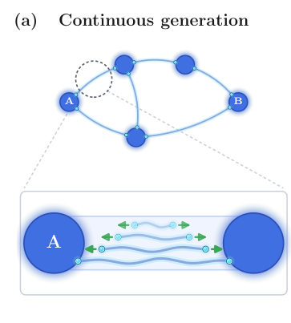
<figcaption class="paper-figure-caption"><b>Fig 1.</b> Figure 1: Two resource regimes of a quantum network, and the one we solve. Each panel draws the same five-node network, with one of its links magnified below. (a) Under continuous entanglement generation, a link is a repeater channel that keeps distributing pairs. A pair separates inside the channel and one half travels to each node. The pair at the bottom has already arrived. Fresh pairs keep coming, so one is as good as another and routing maximizes the rate delivered. The channel is the resource, which is why a link is drawn as a single edge. (b) One-shot operation is the regime we study. The links hold whatever they have produced by now, and nothing follows. Nothing travels in the...</figcaption>
</figure>
<figure class="paper-figure-card">
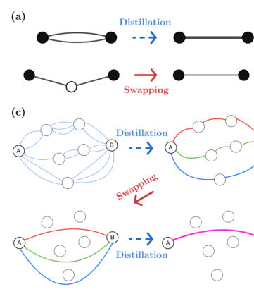
<figcaption class="paper-figure-caption"><b>Fig 2.</b> Figure 2: Scheduling of swapping and distillation operations in quantum networks. (a) Distillation consumes two parallel edges between the same pair of nodes to produce a single higher-fidelity edge, while swap- ping consumes two edges meeting at an intermediate node to produce a direct edge between their outer endpoints. (b) Two users share a direct edge of fidelity 0.745 and a two-hop route through a repeater, each hop a link of two edges of fidelity 0.83. Every branch reduces this graph to a single end-to-end connection through four operations, swapping (red, solid) and distillation (blue, dashed), and every branch spends all five edges. The schedules still deliver different fidelities....</figcaption>
</figure>
<figure class="paper-figure-card">
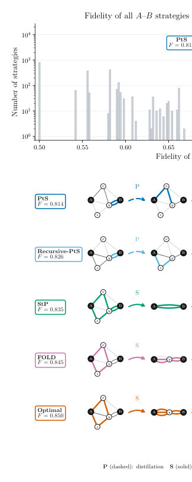
<figcaption class="paper-figure-caption"><b>Fig 3.</b> Figure 3: Every schedule connecting two nodes, enumerated: the optimum interleaves swapping and distillation rather than follow- ing either canonical ordering, and FOLD nearly reaches it. Fidelity of all 2,885 operation sequences connecting A and B on the graph shown. Each marked strategy below is drawn as purify (P) and swap (S) operations, the edges an operation consumes colored and any unspent edge left pale. The strategies are purify-then-swap (PtS), swap-then-purify (StP), the recursive purify-and-swap reduction (Recursive, Section 3.4) [36] and FOLD, which leads all three. PtS, the ordering most schedulers assume, is the weakest here.</figcaption>
</figure>
<figure class="paper-figure-card">
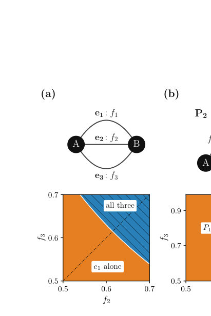
<figcaption class="paper-figure-caption"><b>Fig 4.</b> Figure 4: Optimal solutions include the highest-fidelity route, and additional routes help only when their fidelities are close. Across the three panels a warm hue marks an optimum that uses a single route on its own and blue one that combines routes by distillation. Each topology is sketched above the panel it belongs to. (a) Three parallel edges standing for candidate routes between the same pair of nodes – a better route e1 of fidelity f1 = 0.7 and two weaker ones e2, e3. Over (f2, f3) the optimum is either e1 alone or all three distilled together, so distilling only the two weaker routes claims no region of the plane at all. The dotted line marks f2 = f3. (b) The triangle of Di Franco...</figcaption>
</figure>
<figure class="paper-figure-card">
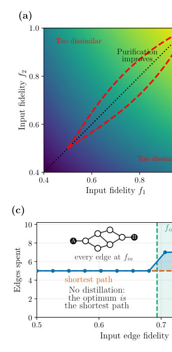
<figcaption class="paper-figure-caption"><b>Fig 5.</b> Figure 5: Distillation improves only inside the purifiable region: a single edge is optimal about half the time, and the shortest path stays optimal until fidelities cross a threshold. The same restriction, seen at three scales. (a) The distillation function: output fidelity Fpur(f1, f2) of Eq. (4), with the red dashed curve bounding the region where distillation strictly improves upon both inputs and the dotted line marking f1 = f2. The region requires both inputs above f = 0.5 and, above that, excludes pairs whose fidelities are too dissimilar. (b) A pair of nodes: two nodes joined by five parallel edges of independently randomized Werner-state fidelity, over 5,000 draws, with the optimal...</figcaption>
</figure>
</div>
<p><strong>Summary.</strong> This paper tackles the challenging one-shot routing problem in quantum networks, where the goal is maximizing connection fidelity from finite resources. The authors develop the FOLD heuristic, a polynomial-time algorithm that efficiently finds near-optimal routing schedules by intelligently interleaving entanglement swapping and distillation. This work is vital for designing scalable quantum communication protocols.</p>
<p><strong>Why it may be interesting.</strong> It provides a concrete, computationally tractable algorithm (FOLD) for optimizing resource utilization in quantum communication networks, which is crucial for scaling up quantum internet infrastructure.</p>
<details>
<summary>Detailed structure</summary>
<p><strong>Main problem.</strong> The paper addresses the complex 'one-shot routing' problem in quantum networks, which requires optimizing end-to-end fidelity from a fixed, limited set of entangled resources rather than maximizing the rate of resource generation.</p>
<p><strong>Main result.</strong> The proposed heuristic, FOLD, runs in polynomial time and achieves near-optimal end-to-end fidelity, significantly outperforming exact scheduling methods whose complexity is super-exponential.</p>
<p><strong>Method.</strong> The authors introduce the Fidelity-Optimizing Local Detours (FOLD) heuristic, which iteratively improves paths by merging detours only when distillation boosts the overall fidelity on both branches.</p>
<p><strong>Model / system.</strong> The model is a quantum network connecting nodes via links characterized by Werner-state entangled pairs. The process involves jointly optimizing path selection, entanglement swapping, and distillation schedules.</p>
<p><strong>Key observables.</strong> End-to-end fidelity ($F = \langle\Psi^-|
ho|\Psi^-
angle$), which quantifies the quality of the quantum connection.</p>
<p><strong>Important parameters / regimes.</strong> The size of the network (number of nodes $n$ and edges $m$), the circuit rank $r(G)$, and the path budget $k$.</p>
<p><strong>Assumptions / limitations.</strong> The analysis assumes the ability to evaluate fidelity for swapping and distillation operations, and the heuristic relies on bounding the number of successful merges by the graph's cycle rank.</p>
<p><strong>Figures summary.</strong> Figures compare fidelity achieved by various scheduling strategies (e.g., purify-then-swap vs. optimal interleaving) and demonstrate the polynomial scaling of the FOLD heuristic compared to exponential exact solvers.</p>
<p><strong>Paper structure.</strong> The paper first establishes the one-shot routing formulation, contrasts it with rate-based models, develops the mathematical framework for fidelity calculation, introduces the intractable exact solution, and finally proposes and analyzes the polynomial-time FOLD heuristic.</p>
</details>
<details>
<summary>Abstract</summary>
<p>Distributed quantum computation requires many entangled pairs to be available simultaneously, so routing must optimize fidelity from a fixed, short-lived set of network resources rather than the rate of pairs accumulated over time. We formulate this one-shot routing problem for heterogeneous Werner-state links and jointly optimize path selection and the schedule of entanglement swapping and distillation. We show that the common purify-then-swap ordering is not optimal network-wide and that exact schedule enumeration requires $m^{Θ(m)}$ time. We introduce Fidelity-Optimizing Local Detours (FOLD), a heuristic that starts from the highest-fidelity path and merges a detour only when distillation improves on both routes and raises end-to-end fidelity. FOLD runs in polynomial time, recovers almost all of the optimal fidelity on tractable instances, and is four orders of magnitude faster than exact optimization at circuit rank $5$. On the Internet topologies where any strategy improves on shortest-path routing, FOLD achieves the highest mean end-to-end fidelity among the polynomial baselines. We further extend the formulation to links whose fidelities are known only as distributions, where uncertainty, rather than the effort spent routing, limits the fidelity delivered. Through an example of requests competing for the same links, we show that coordination becomes a condition for feasibility, and that a shared path budget controls the fidelity trade-off between them.</p>
</details>
<p><sub><a href="#top">↑ back to top</a></sub></p>

<p><a id="paper-2609.30141"></a></p>
<h3 id="optimal-two-qubit-gate-cutting-cost-and-measures-of-nonlocality"><a href="http://arxiv.org/abs/2609.30141v1">Optimal Two-Qubit Gate-Cutting Cost and Measures of Nonlocality</a></h3>
<p><strong>Authors:</strong> Michael Hart<br>
<strong>Type:</strong> theory · <strong>Category:</strong> quantum information and computing · <strong>PDF:</strong> <a href="https://arxiv.org/pdf/2609.30141v1">https://arxiv.org/pdf/2609.30141v1</a><br>
<strong>Analysis basis:</strong> full PDF text, analyzed in chunks</p>
<div class="figure-strip-hint">↔ Scroll figures horizontally</div>
<div class="paper-figures-scroll">
<figure class="paper-figure-card">
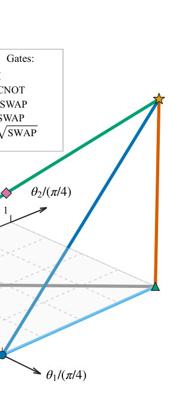
<figcaption class="paper-figure-caption"><b>Fig 1.</b> Figure 1: Non-negative Cartan tetrahedron of Eq. (4), with each Cartan coordinate normalised by π/4. The marked points show the identity, controlled-NOT (CNOT), iSWAP, SWAP and √</figcaption>
</figure>
<figure class="paper-figure-card">
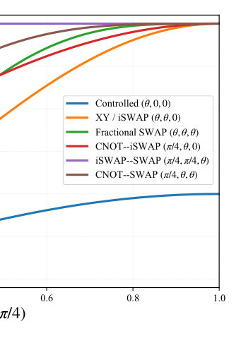
<figcaption class="paper-figure-caption"><b>Fig 2.</b> Figure 2: Optimal QPD extent along the six canonical edge families. The curves are obtained by substituting the Cartan paths in Table 1 into Eq. (9). Each family uses 0 ≤θ ≤π/4, and the horizontal axis shows θ/(π/4).</figcaption>
</figure>
<figure class="paper-figure-card">
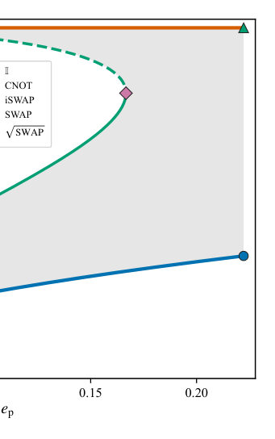
<figcaption class="paper-figure-caption"><b>Fig 3.</b> Figure 3: Optimal QPD extent versus entangling power. The solid curves are the exact envelopes in Eq. (22), attained by the controlled and iSWAP–SWAP families. The shaded area is the sharp outer- envelope band: every physical Cartan point projects into it or onto its boundary, but the interior need not be pointwise realised.</figcaption>
</figure>
<figure class="paper-figure-card">
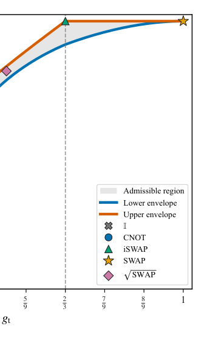
<figcaption class="paper-figure-caption"><b>Fig 4.</b> Figure 4: Optimal QPD extent versus gate typicality. The solid curves are the exact lower and upper envelopes in Eqs. (23) and (24). The upper boundary switches from the fractional SWAP to the XY/iSWAP family at gt = 4/9 and reaches the uniform-spectrum γ = 7 plateau at gt = 2/3. The shaded area is the corresponding sharp outer-envelope band.</figcaption>
</figure>
<figure class="paper-figure-card">
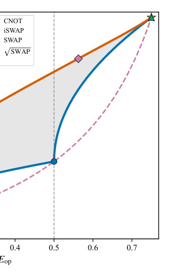
<figcaption class="paper-figure-caption"><b>Fig 5.</b> Figure 5: Optimal QPD extent versus operator entanglement. The solid curves are the exact physical two-qubit-unitary envelopes in Eqs. (28) and (29). The lower equality spectrum changes from controlled rank-two to pair-pair at Eop = 1/2, while fractional SWAP generates the upper boundary. The shaded area is the corresponding sharp outer-envelope band.</figcaption>
</figure>
</div>
<p><strong>Summary.</strong> This theoretical paper analyzes the optimal cost ($\gamma$) associated with gate-cutting, a method for decomposing nonlocal quantum gates. It establishes that $\gamma$ is mathematically linked to the operator-Schmidt spectrum and derives sharp bounding curves showing how five distinct measures of gate nonlocality constrain this cost. The work reveals that no single measure universally determines the optimal cost, providing deep insight into the structure of quantum gate resources.</p>
<p><strong>Why it may be interesting.</strong> The rigorous quantification of how different measures of nonlocality constrain the fundamental cost of simulating quantum gates is highly relevant for understanding resource theories in quantum computation.</p>
<details>
<summary>Detailed structure</summary>
<p><strong>Main problem.</strong> The paper aims to determine the relationship between the optimal two-qubit gate-cutting cost ($\gamma$) and various established measures of two-qubit gate nonlocality.</p>
<p><strong>Main result.</strong> The optimal cost $\gamma$ is shown to be a Rényi-1/2 functional of the operator-Schmidt spectrum, and the study derives sharp lower and upper envelopes connecting $\gamma$ to five distinct nonlocality descriptors.</p>
<p><strong>Method.</strong> The analysis involves recasting $\gamma$ as a Rényi functional and deriving sharp bounds by analyzing canonical one-parameter families of two-qubit unitaries.</p>
<p><strong>Model / system.</strong> The system under study is two-qubit unitary gates ($U$), which are parameterized using the Cartan decomposition, restricting the analysis to the non-negative Cartan tetrahedron.</p>
<p><strong>Key observables.</strong> Optimal QPD Extent ($\gamma$), Entangling power ($e_p$), Gate typicality ($g_t$), Operator entanglement ($E_{op}$), Schmidt strength ($K_{Sch}$), and Maximum product-input concurrence ($C_{max}$).</p>
<p><strong>Important parameters / regimes.</strong> The angles ($   heta_1,     heta_2,     heta_3$) defining the unitary gate within the Cartan parameters, and the normalized operator-Schmidt spectrum $p$.</p>
<p><strong>Assumptions / limitations.</strong> The analysis assumes invariance of $\gamma$ and the descriptors under local pre- and post-unitaries, allowing restriction to the diagonal unitary form $U_d$.</p>
<p><strong>Figures summary.</strong> Figures illustrate $\gamma$ versus the five nonlocality descriptors ($e_p, g_t, E_{op}, K_{Sch}$), showing the derived lower and upper bounding envelopes for the optimal gate-cutting cost.</p>
<p><strong>Paper structure.</strong> The paper establishes the connection between gate-cutting and the operator-Schmidt spectrum, derives the functional form of $\gamma$, and then systematically derives and compares the sharp lower and upper envelopes imposed by each of the five nonlocality descriptors.</p>
</details>
<details>
<summary>Abstract</summary>
<p>Circuit cutting enables quantum computations to be decomposed into smaller subcircuits at the cost of additional sampling overhead. Gate-cutting provides one such approach by replacing nonlocal gates with quasiprobability decompositions of local operations. Starting from the known optimal two-qubit gate-cutting formula, we derive complete sharp lower and upper envelopes relating the quasiprobability extent $γ$ to five established descriptors: entangling power, gate typicality, operator entanglement, Schmidt strength, and maximum product-input concurrence. We recast $γ$ as a Rényi-$1/2$ functional of the operator-Schmidt spectrum and show how the physical constraints on two-qubit spectra sharpen generic entropy bounds and select a small set of recurring extremal Cartan families. None of the five descriptors generically determines $γ$ alone, but each imposes exact constraints, revealing how substantially the optimal gate-cutting cost can vary between gates with similar nonlocal characteristics.</p>
</details>
<p><sub><a href="#top">↑ back to top</a></sub></p>

<p><a id="paper-2609.30268"></a></p>
<h3 id="quantum-channel-stein-theorem-beyond-definite-causal-order"><a href="http://arxiv.org/abs/2609.30268v1">Quantum Channel Stein Theorem beyond Definite Causal Order</a></h3>
<p><strong>Authors:</strong> Chengkai Zhu, Xin Wang<br>
<strong>Type:</strong> theory · <strong>Category:</strong> quantum information and computing · <strong>PDF:</strong> <a href="https://arxiv.org/pdf/2609.30268v1">https://arxiv.org/pdf/2609.30268v1</a><br>
<strong>Analysis basis:</strong> full PDF text, analyzed in chunks</p>
<div class="figure-strip-hint">↔ Scroll figures horizontally</div>
<div class="paper-figures-scroll">
<figure class="paper-figure-card">
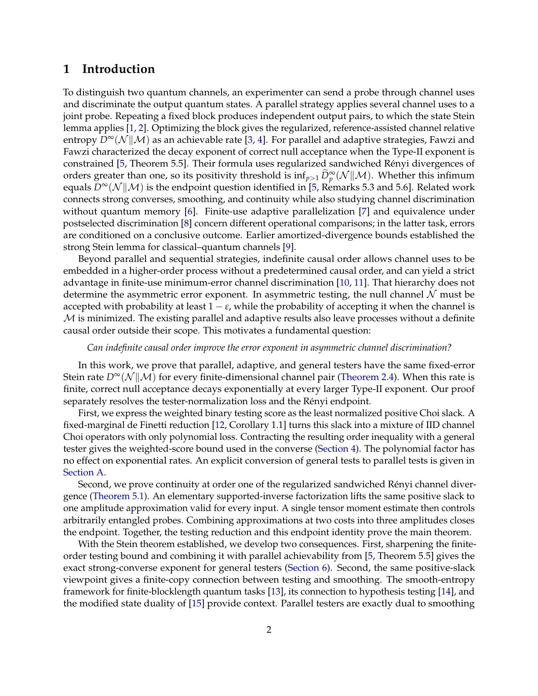
<figcaption class="paper-figure-caption"><b>Fig 1.</b> Low-resolution page preview, page 2</figcaption>
</figure>
<figure class="paper-figure-card">
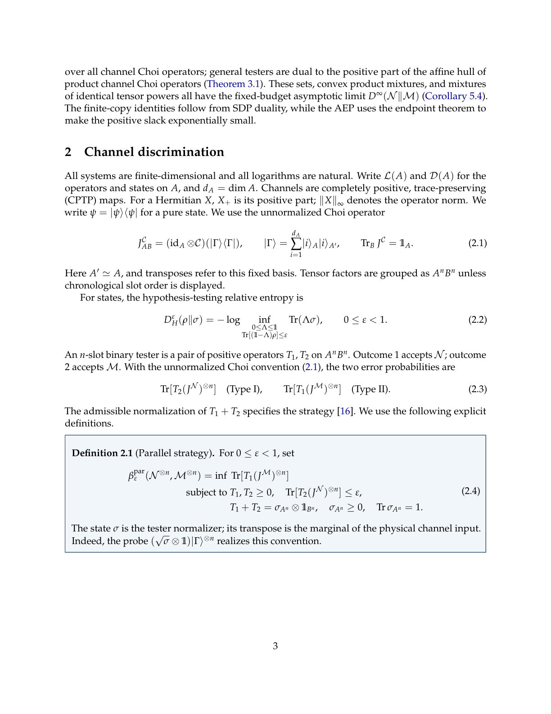
<figcaption class="paper-figure-caption"><b>Fig 2.</b> Low-resolution page preview, page 3</figcaption>
</figure>
<figure class="paper-figure-card">
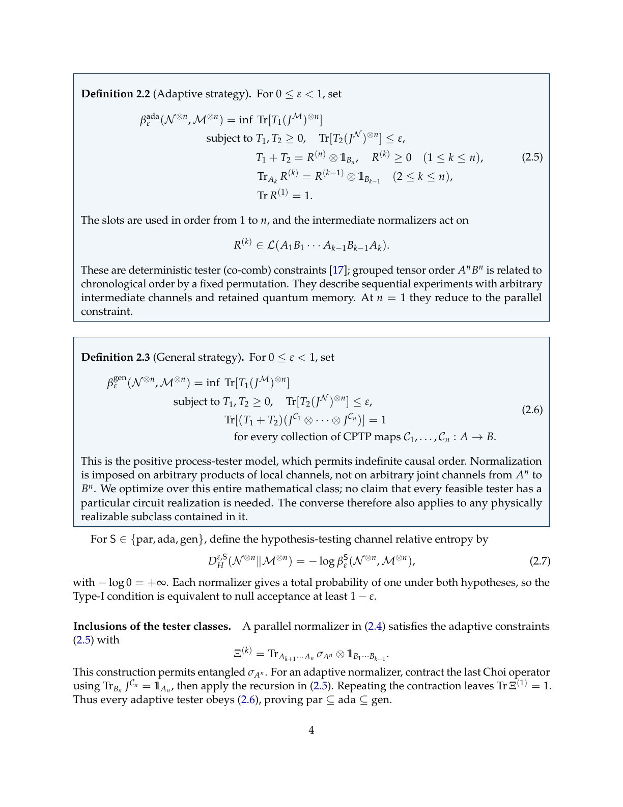
<figcaption class="paper-figure-caption"><b>Fig 3.</b> Low-resolution page preview, page 4</figcaption>
</figure>
<figure class="paper-figure-card">
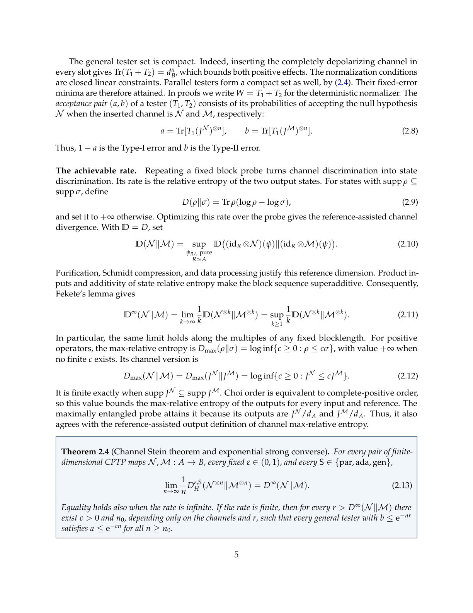
<figcaption class="paper-figure-caption"><b>Fig 4.</b> Low-resolution page preview, page 5</figcaption>
</figure>
<figure class="paper-figure-card">
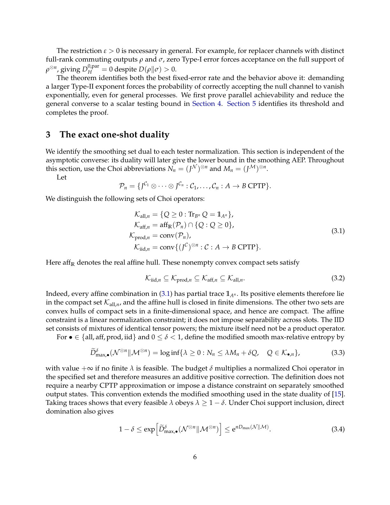
<figcaption class="paper-figure-caption"><b>Fig 5.</b> Low-resolution page preview, page 6</figcaption>
</figure>
</div>
<p><strong>Summary.</strong> This work establishes a quantum channel Stein theorem proving that the asymptotic rate for distinguishing between two quantum channels is independent of the testing strategy used (parallel, adaptive, or general). The key finding is that adaptivity offers no asymptotic advantage in this context. The paper rigorously connects hypothesis testing bounds to fundamental quantum divergences.</p>
<p><strong>Why it may be interesting.</strong> It provides fundamental theoretical bounds on quantum channel discrimination, showing that complex causal structures (like general testers) do not offer an asymptotic advantage over simpler, parallel testing schemes.</p>
<details>
<summary>Detailed structure</summary>
<p><strong>Main problem.</strong> The paper investigates whether different quantum channel testing strategies (parallel, adaptive, general/indefinite causal order) yield different asymptotic advantages when distinguishing between two quantum channels.</p>
<p><strong>Main result.</strong> It proves that for any fixed error tolerance, all testing strategies achieve the same asymptotic rate, which is the regularized channel relative entropy, demonstrating that adaptivity provides no asymptotic advantage.</p>
<p><strong>Method.</strong> The analysis uses hypothesis testing theory, relating the achievable rate to the regularized channel relative entropy via continuity proofs of the sandwiched Rényi divergence.</p>
<p><strong>Model / system.</strong> The system involves finite-dimensional memoryless quantum channels, modeled as Completely Positive Trace-Preserving (CPTP) maps, $N$ and $M$. The testing is performed over $n$ uses of these channels.</p>
<p><strong>Key observables.</strong> The asymptotic testing rate, $D_{\infty}(N \parallel M)$, and the error probabilities associated with the three tester types (parallel, adaptive, general).</p>
<p><strong>Important parameters / regimes.</strong> The fixed type-I error tolerance $\epsilon \in (0, 1)$ and the number of uses $n 	o \infty$.</p>
<p><strong>Assumptions / limitations.</strong> The proof relies on establishing the continuity of the regularized sandwiched Rényi channel divergence at order one, and using the fixed-marginal de Finetti theorem for the general tester bound.</p>
<p><strong>Paper structure.</strong> The paper progresses from establishing the asymptotic equality of testing rates across different strategies (Stein Theorem), to deriving exact one-shot duality relations, and finally establishing the exact strong-converse exponent based on these results.</p>
</details>
<details>
<summary>Abstract</summary>
<p>Distinguishability is a central concept in information theory and extends naturally to quantum systems. This work shows that, for any two finite-dimensional memoryless quantum channels, parallel, adaptive and general testing strategies achieve the same Stein exponent at every fixed type-I error tolerance $ε\in(0,1)$, namely the regularized channel relative entropy. When this rate is finite, any larger type-II exponent forces the probability of correctly accepting the null hypothesis to decay exponentially. Thus, adaptivity provides no asymptotic advantage. The key step is proving the continuity of the regularized sandwiched Rényi channel divergence at order one. We also derive the exact strong-converse exponent for general testers.</p>
</details>
<p><sub><a href="#top">↑ back to top</a></sub></p>

<p><a id="paper-2609.29210"></a></p>
<h3 id="representation-dependent-recoverability-in-quantum-compilation"><a href="http://arxiv.org/abs/2609.29210v1">Representation-Dependent Recoverability in Quantum Compilation</a></h3>
<p><strong>Authors:</strong> Jinze Yang, Yangyang Li, Xiu-Hao Deng<br>
<strong>Type:</strong> theory · <strong>Category:</strong> quantum information and computing · <strong>PDF:</strong> <a href="https://arxiv.org/pdf/2609.29210v1">https://arxiv.org/pdf/2609.29210v1</a><br>
<strong>Analysis basis:</strong> full PDF text, analyzed in chunks</p>
<div class="figure-strip-hint">↔ Scroll figures horizontally</div>
<div class="paper-figures-scroll">
<figure class="paper-figure-card">

<figcaption class="paper-figure-caption"><b>Fig 1.</b> Figure 1: Dispersal, and the two currencies that undo it. (a) A QAOA cost layer e−iγC on m edges is one commuting object carrying m records. Lowered under a digitized schedule it reaches a downstream compiler as r contiguous rounds of grid residues, optionally sign-randomized and separated by Clifford records; the edge total xj is then a sum that no single record and no proper prefix reveals. The mixer layers bound the block rather than sitting inside it: at generic angles they are non-Clifford RX rotations (remark 10). The controlled-power ladder beneath is the complementary case— its rounds are contiguous, but round one already fixes the aggregate θj(2r−1), so it supplies contiguity...</figcaption>
</figure>
<figure class="paper-figure-card">
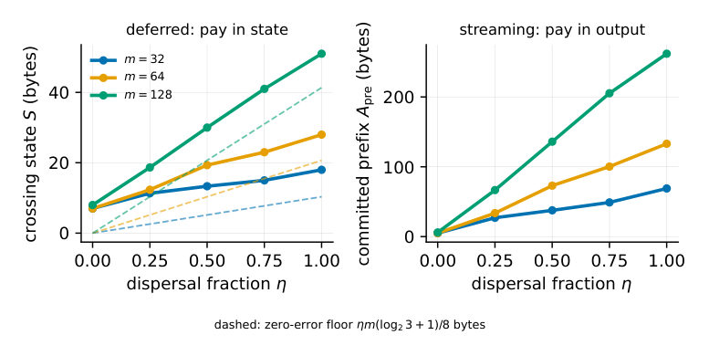
<figcaption class="paper-figure-caption"><b>Fig 2.</b> Figure 2: Measured dispersal–memory tradeoff on the executable two-round masked-share device (Q = 3, binary aggregates, tracked signs; every point restart-verified: the serialized snapshot alone plus the round-two suffix reproduces the exact output). Left: a deferred compact-output compiler pays the dispersal in crossing state; measured slopes 10.3/21.1/43.3 bytes per unit η at m = 32/64/128 sit on the zero-error floor ηm(log2 3 + 1)/8 bytes (dashed; ratios 0.99–1.05), the residue-plus-frame cost of theorem 4 and proposition 5. Right: a streaming compiler pays the same dispersal in committed prefix output (Apre slopes 60/129/260 bytes per unit η, larger by the public addresses) while its...</figcaption>
</figure>
<figure class="paper-figure-card">
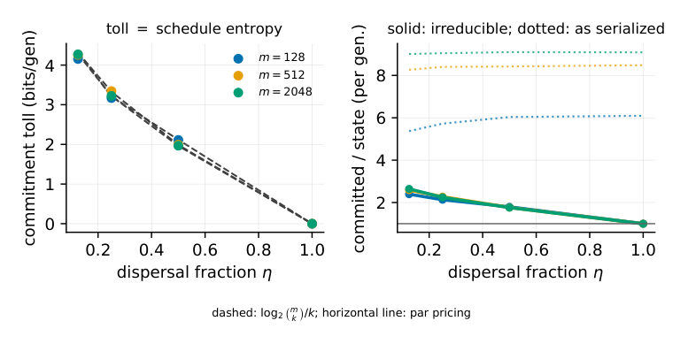
<figcaption class="paper-figure-caption"><b>Fig 3.</b> Figure 3: The commitment toll, preregistered and measured on the two-round masked-share device; every cell restart-verified. Left: bits per committed generator paid by an executed committed prefix in excess of the deferred snapshot, against the predicted mask entropy log2 m k  /k (dashed). The toll is flat in m and vanishes at η = 1; for the buffered mask-deferred control of proposition 7(ii) it is zero at every η. Right: the per-generator exchange rate between the committed and state channels. Solid: irreducible, under an identity-optimal serializer—at most 2.64, and exactly 1 when the dispersal mask is public. Dotted: the same rate as actually serialized by the address-per-record codec...</figcaption>
</figure>
<figure class="paper-figure-card">
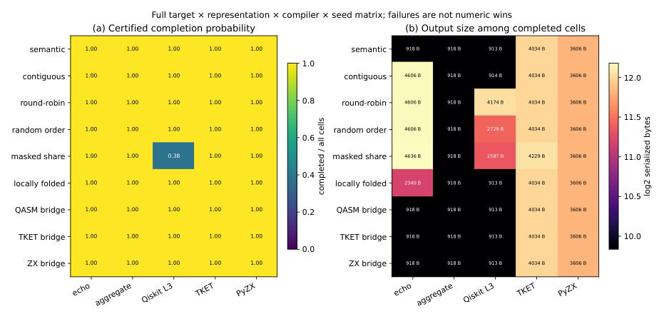
<figcaption class="paper-figure-caption"><b>Fig 4.</b> Figure 4: Complete matched-representation interaction summary. Panel (a) reports certified completion probability for every representation–compiler pair; panel (b) reports serialized output size only among completed cells. Predicate errors remain status observations and never become numerical wins.</figcaption>
</figure>
<figure class="paper-figure-card">
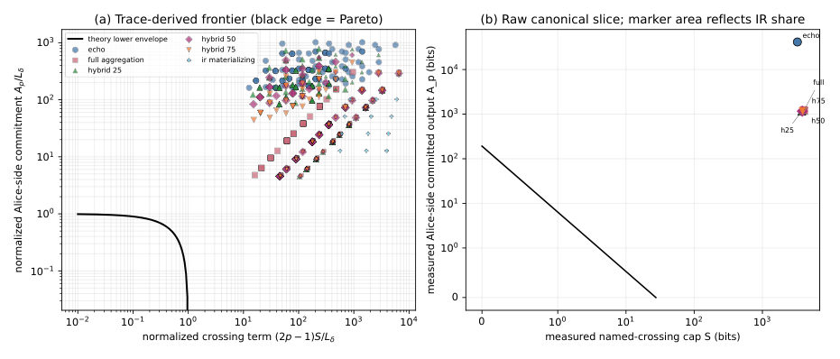
<figcaption class="paper-figure-caption"><b>Fig 5.</b> Figure 5: Trace-derived commitment–crossing-state–IR surface. The black edge marks measured Pareto points and the theoretical lower envelope is evaluated in the same serialized-bit coordinates. Marker area in the raw slice reflects IR share; RSS is recorded separately.</figcaption>
</figure>
</div>
<p><strong>Summary.</strong> This paper rigorously analyzes how quantum information, particularly aggregate phases, degrades or becomes 'less recoverable' as it passes through multiple stages of quantum compilation. By formalizing this loss using information-theoretic channels, the authors prove that the compiler's strategy—whether to commit results early or buffer state—imposes a quantifiable resource toll. The key takeaway is the necessity of preserving high-level phase semantics until the final aggregation step to minimize computational overhead.</p>
<p><strong>Why it may be interesting.</strong> This work provides fundamental, quantitative guidelines for quantum algorithm implementation, directly impacting the resource estimation and feasibility assessment for complex quantum computations.</p>
<details>
<summary>Detailed structure</summary>
<p><strong>Main problem.</strong> The paper quantifies the information-theoretic cost associated with compiling high-level quantum structures into low-level gate sequences, specifically focusing on how the choice of compilation representation affects the recoverability of aggregate quantum phases.</p>
<p><strong>Main result.</strong> The authors establish a formal trade-off showing that early commitment of output information incurs a measurable 'toll' compared to methods that buffer or defer state information, suggesting that preserving phase semantics until the final aggregation step is crucial for efficiency.</p>
<p><strong>Method.</strong> The work develops a budget-explicit compiler model that charges information-theoretic costs (in bits) for different compilation passes, analyzing the trade-off between committed output ($\overline{A}_p$) and serialized state capacity ($S$).</p>
<p><strong>Model / system.</strong> The model is applied to quantum compilation, analyzing the process of lowering a high-level structure, such as a commuting layer of phase gates, into a sequence of elementary gates (e.g., Clifford+$T$ words).</p>
<p><strong>Key observables.</strong> Committed output information ($\overline{A}_p$), serialized crossing-state capacity ($S$), and the specific information toll ($\log_2 inom{m}{k}$) paid by early commitment.</p>
<p><strong>Important parameters / regimes.</strong> Number of generators ($m$), approximation tolerance ($\epsilon$), and the number of compilation rounds ($r$).</p>
<p><strong>Assumptions / limitations.</strong> The analysis relies on formalizing the problem via information-theoretic channels and assumes that the physical cost can be mapped to these information-theoretic bounds.</p>
<p><strong>Figures summary.</strong> Figures illustrate the dispersal process of quantum information across compilation rounds and detail the mathematical relationship between the two information currencies ($   ext{S}$ and $   ext{Ap}$) that must be accounted for.</p>
<p><strong>Paper structure.</strong> The paper first introduces the problem of representation-dependent recoverability, formalizes the two information channels ($  ext{Ap}$ and $  ext{S}$), derives the core information bound, and then demonstrates this bound using measured tolls from instrumented compilers, concluding with a design rule for optimal compilation pipelines.</p>
</details>
<details>
<summary>Abstract</summary>
<p>Fault-tolerant compilation can disperse high-level structure: schedules split an accumulated phase across rounds, gate synthesis replaces an angle by a Clifford+$T$ word, and randomized compiling spreads rotations over sign-randomized fragments. They preserve the computation but change how cheaply a downstream compiler can recover the aggregate phase data. We formalize this representation-dependent recoverability by charging two channels: output committed before the suffix arrives, and a serialized restart state crossing the cut. For an $r$-round accumulation of a commuting layer with $m$ generators at accuracy $ε$ ($K_ε=Θ(1/ε)$), any $p$-pass compiler correct on every valid stream with failure probability at most $δ$ obeys $\overline{A}_p+(2p-1)S\geq(1-δ)m\log_2 K_ε-h_2(δ)$, where $\overline{A}_p$ is committed output and $S$ is the crossing-state cap. The bound covers compile-time randomized compiling; a memory-capped block compiler attains it within a constant factor, and direct semantic aggregation reaches compact output with logarithmic state.   The two channels are not always interchangeable. A compiler whose committed prefix is executed at the cut pays a toll the state channel never pays: the entropy $\log_2\binom{m}{k}$ of the mask naming which $k$ coordinates it commits early. Compilers that defer or buffer pay none of it. We prove both directions and, with instrumented compilers under a preregistered protocol, measure a per-generator toll matching $\log_2\binom{m}{k}/k$ that vanishes for a public mask and a buffered control.   Under a disclosed fixed-total-error Clifford+$T$ and surface-code model, a materialize-first pipeline costs orders of magnitude more logical $T$ states and spacetime volume than a semantic-first one. Phase semantics should therefore be preserved until aggregation whenever the interface permits.</p>
</details>
<p><sub><a href="#top">↑ back to top</a></sub></p>

<p><a id="paper-2609.28625"></a></p>
<h3 id="rlvr-landscapes-for-iterated-multiplications-can-be-benign-insights-from-spin-glass-theory"><a href="http://arxiv.org/abs/2609.28625v1">RLVR landscapes for iterated multiplications can be benign: Insights from spin-glass theory</a></h3>
<p><strong>Authors:</strong> Noa Rubin, Zohar Ringel<br>
<strong>Type:</strong> both · <strong>Category:</strong> disordered systems and neural networks · <strong>PDF:</strong> <a href="https://arxiv.org/pdf/2609.28625v1">https://arxiv.org/pdf/2609.28625v1</a><br>
<strong>Analysis basis:</strong> full PDF text, analyzed in chunks</p>
<div class="figure-strip-hint">↔ Scroll figures horizontally</div>
<div class="paper-figures-scroll">
<figure class="paper-figure-card">
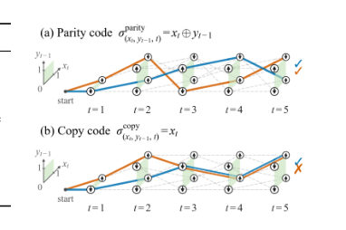
<figcaption class="paper-figure-caption"><b>Fig 1.</b> Figure 1: The RLVR and spin-glass mapping. (I) Relating concepts from reinforcement learning to spin-glass models. (II) Two codes on the (0, 0) window (i.e. ct = (xt, yt−1)), for q = 2 and T = 5. Each circle is a cell (xt, yt−1, t); the arrow inside it is the code’s output at that cell, up for token 1 and down for token 0. Dashed gray edges trace the code’s action on all input sequences. Two inputs differing only in x1 are highlighted: x = [0, 1, 0, 1, 1] and x = [1, 1, 0, 1, 1].Both trajectories of the parity code (a) converge to the correct answer, whereas the copy code (b) succeeds on only one of the two, the same success rate as chance.</figcaption>
</figure>
<figure class="paper-figure-card">
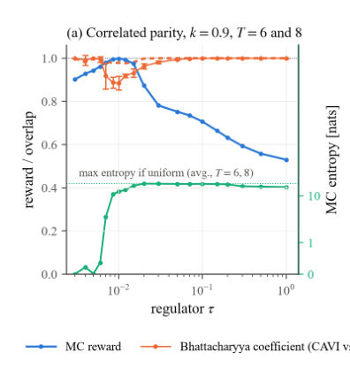
<figcaption class="paper-figure-caption"><b>Fig 2.</b> Figure 2: MC stationary distributions against the CAVI endpoints seeded at them, as a function of the regulator τ: (a) the 27 correlated-input parity traps, (b) the twelve tied quasigroup traps. Left axis: MC reward, averaged over all traps and replicas; Bhattacharyya coefficient between the CAVI endpoint and the MC histogram, mean ± standard deviation over the finite-temperature traps; and its null. Right axis: the entropy P c H(πc) of πMC, averaged over the same traps; dotted lines mark its value when every cell is uniform. Open markers: fewer than half of the traps enter the average at that τ; missing points: none does.</figcaption>
</figure>
<figure class="paper-figure-card">
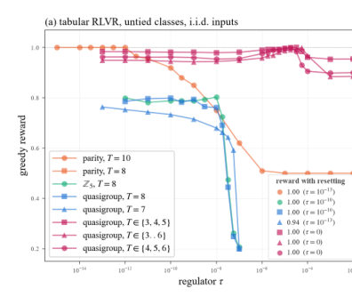
<figcaption class="paper-figure-caption"><b>Fig 3.</b> Figure 3: The entropy regulator on the untied classes. (a) Tabular RLVR from a uniformly random policy at a constant regulator τ, scored by the greedy reward of the endpoint policy. Each point is a mean over independent runs: 100 for parity (window (0, 0)), 240 for the two classes at T = 8 using window (0, 0) (Z5, quasigroup), 12 for the narrow-window classes using window (2, 1) (at T ∈{3, 4, 5} and T ∈{4, 5, 6}) and window (1, 1) (at T ∈{3, . . . , 6}), and for quasigroup using window (0, 3) at T = 7. The inset table summarises reset interventions of the same class (2% of the cells redrawn uniformly every 10 iterations for 100 cycles): the reward attained and the τ of the run it...</figcaption>
</figure>
</div>
<p><strong>Summary.</strong> This work analyzes the optimization landscape of reinforcement learning for algorithmic tasks by mapping it to a spin-glass model. The key finding is that the landscape itself is generally benign, suggesting that training failures are due to traversal issues like diffusive barriers rather than rugged local minima. This has implications for understanding the fundamental limitations of deep learning optimization.</p>
<p><strong>Why it may be interesting.</strong> The connection between learning dynamics (RLVR) and the physics of disordered systems (spin glasses) provides a powerful, non-standard lens for understanding optimization in complex machine learning models.</p>
<details>
<summary>Detailed structure</summary>
<p><strong>Main problem.</strong> The paper investigates the optimization landscape of Reinforcement Learning with Verifiable Rewards (RLVR) when applied to algorithmic tasks like iterated group multiplication.</p>
<p><strong>Main result.</strong> The optimization landscape is shown to be benign, meaning local minima are not the primary obstacle; practical difficulties arise instead from diffusive barriers and gradient estimation errors.</p>
<p><strong>Method.</strong> The authors map the RLVR problem onto an energy-based spin-glass model, allowing for theoretical characterization and comparison with Monte Carlo sampling dynamics.</p>
<p><strong>Model / system.</strong> The system involves mapping RLVR over myopic tabular policies to a spin-glass model defined over deterministic policies. The task involves sequential token generation for algorithmic problems.</p>
<p><strong>Key observables.</strong> The structure of the optimization landscape, the existence of local minima, the RLVR-spin-glass gap, and the success rate of learning complex algorithms.</p>
<p><strong>Important parameters / regimes.</strong> Entropy regulator strength ($eta$), temperature ($    au$), and the degree of input correlation ($k$).</p>
<p><strong>Assumptions / limitations.</strong> The analysis initially relies on the approximation of using myopic tabular policies, and the proof of benignity breaks down with weight tying or input correlations.</p>
<p><strong>Figures summary.</strong> Figures compare MC stationary distributions against CAVI endpoints, illustrating the effect of the entropy regulator ($    au$) and showing the relationship between reward, entropy, and the spin model.</p>
<p><strong>Paper structure.</strong> The paper establishes the theoretical mapping from RLVR to spin-glass models, derives variational bounds, compares the convergence dynamics of MC sampling versus RLVR updates, and finally analyzes the impact of input correlations and policy tying on the landscape's traps.</p>
</details>
<details>
<summary>Abstract</summary>
<p>Despite the importance of reinforcement learning with verifiable rewards (RLVR), the extent to which it can learn new reasoning capabilities remains debated. Here we study the optimization landscape of RLVR on algorithmic tasks, such as iterated group and quasigroup multiplication. To this end, we map entropy-regularized RLVR over myopic tabular policies onto an energy-based (spin-glass) model over deterministic policies. This mapping upper-bounds what RLVR can achieve, and lets us rigorously characterize the landscape in this tabular setting. We show, both theoretically and experimentally, that for a wide class of models and tasks with uncorrelated inputs, this landscape is benign, containing no local minima that could trap RLVR training. Rather, the practical difficulty of these tasks appears to stem, at least in part, from issues such as diffusive barriers and gradient-estimation error in traversing the landscape. These are genuine obstacles that can prevent a solution from being found, but they are distinct from the landscape itself being rugged. We show that these obstacles can often be mitigated through the choice of entropy regulator. Consistent with this theory, we find that a transformer trained from scratch, using only last-token rewards, successfully learns an algorithmic chain of thought for iterated non-Abelian group multiplications.</p>
</details>
<p><sub><a href="#top">↑ back to top</a></sub></p>

<p><a id="paper-2609.30246"></a></p>
<h3 id="the-moreau-yosida-approximation-of-the-entanglement-of-formation-basic-properties-and-accuracy-estimates"><a href="http://arxiv.org/abs/2609.30246v1">The Moreau-Yosida approximation of the Entanglement of Formation: basic properties and accuracy estimates</a></h3>
<p><strong>Authors:</strong> M. E. Shirokov<br>
<strong>Type:</strong> theory · <strong>Category:</strong> quantum information and computing · <strong>PDF:</strong> <a href="https://arxiv.org/pdf/2609.30246v1">https://arxiv.org/pdf/2609.30246v1</a><br>
<strong>Analysis basis:</strong> full PDF text, analyzed in chunks</p>
<div class="figure-strip-hint">↔ Scroll figures horizontally</div>
<div class="paper-figures-scroll">
<figure class="paper-figure-card">
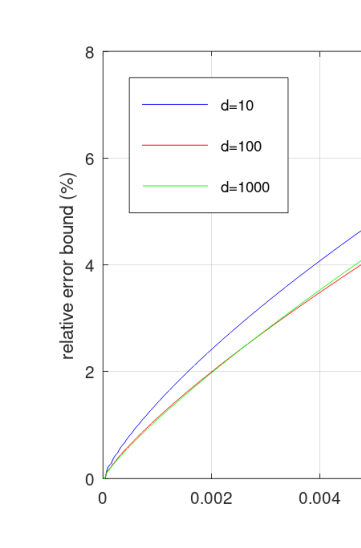
<figcaption class="paper-figure-caption"><b>Fig 1.</b> Figure 1: The percentage value of bred(λ) as a function of λ for d = 10, 100, 1000.</figcaption>
</figure>
<figure class="paper-figure-card">
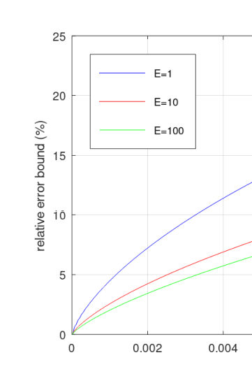
<figcaption class="paper-figure-caption"><b>Fig 2.</b> Figure 2: The percentage value of breN,E(λ) as a function of λ for E = 1, 10, 100.</figcaption>
</figure>
</div>
<p><strong>Summary.</strong> This paper develops the Moreau-Yosida approximation, $E_\lambda^F$, as a mathematically rigorous and computable substitute for the Entanglement of Formation (EoF). By leveraging convex analysis, the authors establish that $E_\lambda^F$ converges monotonically to the true EoF as the regularization parameter $\lambda 	o 0$. This provides powerful tools for bounding and estimating entanglement in complex quantum systems.</p>
<p><strong>Why it may be interesting.</strong> Understanding the rigorous mathematical definition and computational tractability of entanglement measures like EoF is fundamental to quantifying quantum resources in quantum information theory.</p>
<details>
<summary>Detailed structure</summary>
<p><strong>Main problem.</strong> The paper addresses the mathematical challenge of defining and approximating the Entanglement of Formation (EoF), a key measure of entanglement in quantum information theory.</p>
<p><strong>Main result.</strong> It introduces the Moreau-Yosida approximation, $E_\lambda^F$, which is shown to monotonically converge to the true EoF as the regularization parameter $\lambda$ approaches zero.</p>
<p><strong>Method.</strong> The core method involves applying Moreau-Yosida regularization, a technique from convex analysis, to the definition of EoF to create a sequence of computable, convex approximations.</p>
<p><strong>Model / system.</strong> The study concerns bipartite quantum systems described by density matrices $
ho$ acting on the tensor product of two Hilbert spaces ($\mathcal{H}_A \otimes \mathcal{H}_B$).</p>
<p><strong>Key observables.</strong> Entanglement of Formation ($   ext{EoF}$), the approximation $E_\lambda^F(
ho)$, and the difference $|	ext{EoF}(
ho) - E_\lambda^F(
ho)|$.</p>
<p><strong>Important parameters / regimes.</strong> The regularization parameter $\lambda > 0$, and bounds related to the rank or energy of the marginal states.</p>
<p><strong>Assumptions / limitations.</strong> The analysis relies on the global lower semicontinuity of EoF and assumes that the approximation $E_\lambda^F$ is defined via the Moreau envelope structure.</p>
<p><strong>Figures summary.</strong> Figures illustrate the relative error bound $  ext{bred}(\lambda)$ and $   ext{bre}_{N,E}(\lambda)$ as functions of $\lambda$ for different dimensions and energy levels, showing the convergence rate.</p>
<p><strong>Paper structure.</strong> The paper first defines the problem using convex analysis, then derives the variational expressions for $E_\lambda^F$, proves its key properties (convexity, monotonicity, subadditivity), and finally analyzes the convergence rate and conditions for exact equality between $E_\lambda^F$ and $E_F$.</p>
</details>
<details>
<summary>Abstract</summary>
<p>We describe a family of convex uniformly continuous functions $E^λ_F$, $λ>0$, on the set of states of a bipartite quantum system (consisting of finite-dimensional or infinite-dimensional subsystems), which monotonically increase and converge pointwise to the Entanglement of Formation (EoF) as $λ\to0$. These functions are "nonselective" entanglement monotones defined by the way close to the construction of the Moreau-Yosida regularization (the Moreau envelope) of a convex function on a convex set used in the modern convex analysis. So, we call the functions $E^λ_F$ the Moreau-Yosida approximations of the EoF and describe their equivalent definitions and basic properties.   The semicontinuity bounds for the EoF (presented in [Lob.J.Math., 46(6), 2632-2658]) allow us to obtain easily computable upper bounds on the difference $E_F(ρ)-E^λ_F(ρ)$ for a given state $ρ$. These bounds give easily computable bounds on the rate of uniform convergence of the function $E^λ_F$ to the EoF as $λ\to0^+$ on the sets of states with bounded rank/energy of one of the marginal states.   We also discuss sufficient conditions for the coincidence of $E_F(ρ)$ and $E^λ_F(ρ)$ at a given state $ρ$ for all $λ$ small enough and consider several classes of states for which such coincidence takes place.   The conjectured selective LOCC-monotonicity of the functions $E^λ_F$ and a possible way to prove it are briefly discussed.   Secondary parts of the article are written with the help of ChatGPT-5.6.</p>
</details>
<p><sub><a href="#top">↑ back to top</a></sub></p>

<p><a id="paper-2609.29885"></a></p>
<h3 id="the-regularized-channel-renyi-divergence-is-continuous"><a href="http://arxiv.org/abs/2609.29885v1">The regularized channel Rényi divergence is continuous</a></h3>
<p><strong>Authors:</strong> Lukas Schmitt, David Sutter<br>
<strong>Type:</strong> theory · <strong>Category:</strong> quantum information and computing · <strong>PDF:</strong> <a href="https://arxiv.org/pdf/2609.29885v1">https://arxiv.org/pdf/2609.29885v1</a><br>
<strong>Analysis basis:</strong> full PDF text, analyzed in chunks</p>
<div class="figure-strip-hint">↔ Scroll figures horizontally</div>
<div class="paper-figures-scroll">
<figure class="paper-figure-card">
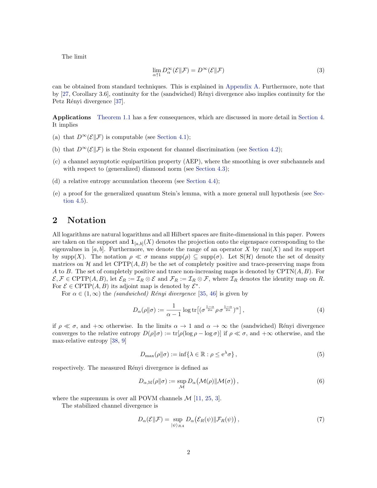
<figcaption class="paper-figure-caption"><b>Fig 1.</b> Low-resolution page preview, page 2</figcaption>
</figure>
<figure class="paper-figure-card">
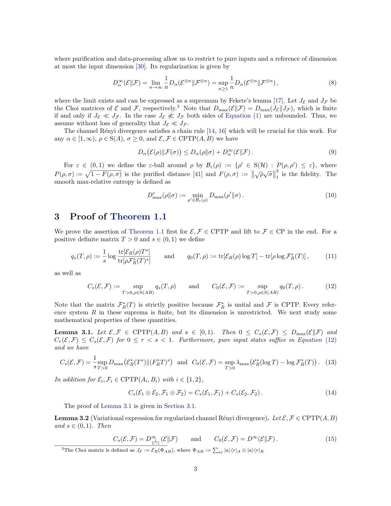
<figcaption class="paper-figure-caption"><b>Fig 2.</b> Low-resolution page preview, page 3</figcaption>
</figure>
<figure class="paper-figure-card">
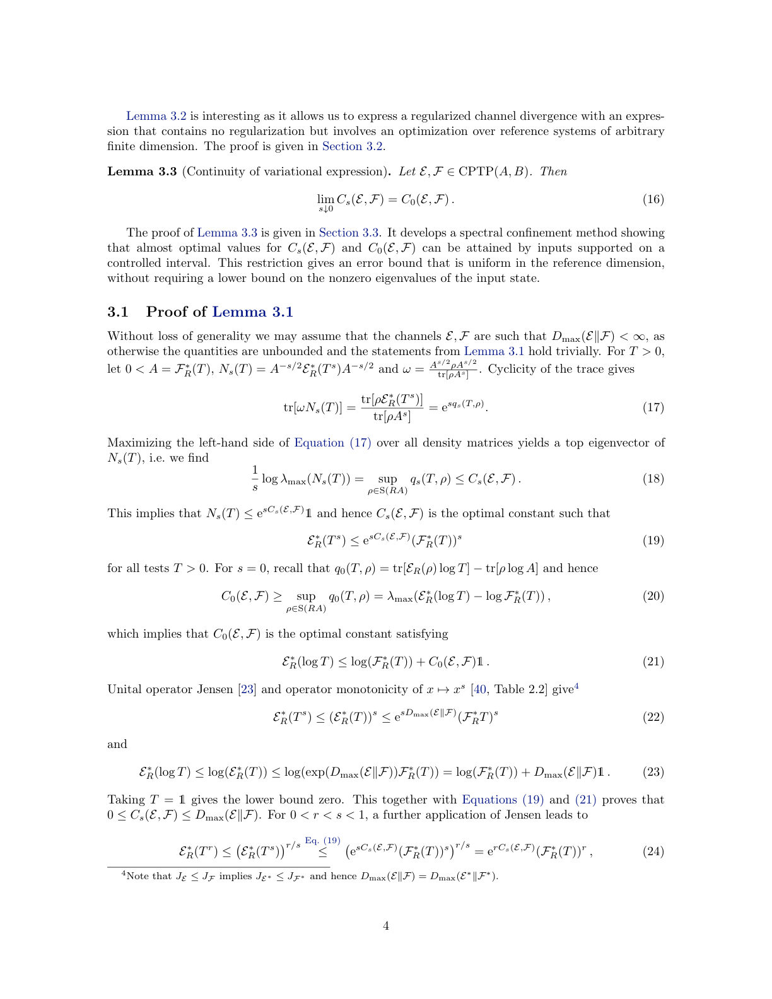
<figcaption class="paper-figure-caption"><b>Fig 3.</b> Low-resolution page preview, page 4</figcaption>
</figure>
<figure class="paper-figure-card">
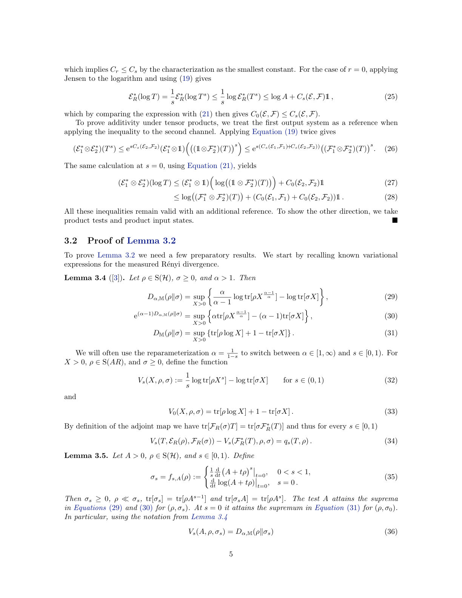
<figcaption class="paper-figure-caption"><b>Fig 4.</b> Low-resolution page preview, page 5</figcaption>
</figure>
<figure class="paper-figure-card">
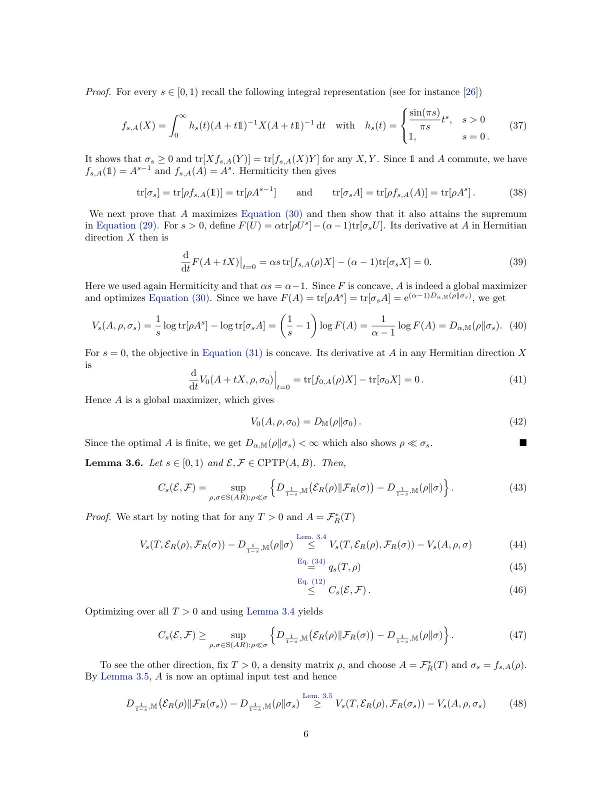
<figcaption class="paper-figure-caption"><b>Fig 5.</b> Low-resolution page preview, page 6</figcaption>
</figure>
</div>
<p><strong>Summary.</strong> This paper proves the continuity of the regularized channel Rényi divergence as the parameter $\alpha$ approaches 1. This mathematical result is highly significant as it establishes the computability of the channel relative entropy and yields several major theorems in quantum information theory, such as strong converse bounds for channel discrimination.</p>
<p><strong>Why it may be interesting.</strong> This work provides fundamental mathematical tools (continuity proofs, computable quantities) for quantifying distinguishability between quantum processes, which is central to quantum communication and computation theory.</p>
<details>
<summary>Detailed structure</summary>
<p><strong>Main problem.</strong> The central problem is proving the continuity of the regularized channel Rényi divergence at the limit $\alpha=1$.</p>
<p><strong>Main result.</strong> The continuity is established, leading to the computability of the channel relative entropy and proving several key theorems, including an exponentially strong converse for channel discrimination.</p>
<p><strong>Method.</strong> The proof utilizes a variational formula that reduces the divergence to a single-letter optimization problem, followed by a novel spectral confinement technique to establish the limit.</p>
<p><strong>Model / system.</strong> The analysis focuses on quantum channels, represented by Completely Positive Trace-Preserving (CPTP) maps, comparing divergences between two such channels, $E$ and $F$.</p>
<p><strong>Key observables.</strong> Regularized channel Rényi divergence ($D_\alpha^\infty(E\|F)$), channel relative entropy ($D_\infty(E\|F)$), and variational expressions ($C_s(E, F)$).</p>
<p><strong>Important parameters / regimes.</strong> The divergence parameter $\alpha$, which is analyzed as $\alpha 	o 1$, and the reparameterization variable $s \in [0, 1)$.</p>
<p><strong>Assumptions / limitations.</strong> The analysis assumes that the Choi matrices $J_E$ and $J_F$ are not pathologically related (e.g., $J_E \ll J_F$) for the quantities to remain bounded.</p>
<p><strong>Paper structure.</strong> The paper develops by first relating the regularized divergence to variational expressions parameterized by $s$, then proving the continuity of these expressions as $s 	o 0$ (or $\alpha 	o 1$), and finally deriving the consequences for channel discrimination and AEP.</p>
</details>
<details>
<summary>Abstract</summary>
<p>We show that the regularized channel Rényi divergence is continuous at $α= 1$. As consequences, we establish an exponentially strong converse for channel discrimination, a subchannel-smoothed asymptotic equipartition property, a relative entropy accumulation theorem, and a new proof of the generalized quantum Stein's lemma. Our result further shows that the regularized channel relative entropy is computable. The continuity proof relies on a variational formula that expresses the regularized channel divergence as a single-letter optimization over variables of unrestricted finite dimension. We then establish continuity using a novel spectral confinement technique.</p>
</details>
<p><sub><a href="#top">↑ back to top</a></sub></p>

<p><a id="paper-2609.29323"></a></p>
<h3 id="two-temperature-scales-in-the-ising-model-on-the-math820math-hyperbolic-lattice-with-free-boundaries-susceptibility-peak-and-boundary-induced-order"><a href="http://arxiv.org/abs/2609.29323v1">Two temperature scales in the Ising model on the $\{5,4\}$ hyperbolic lattice with free boundaries: susceptibility peak and boundary-induced order</a></h3>
<p><strong>Authors:</strong> Sebastian Jaroszewicz, Nahuel Mendez, Maria P. Beccar-Varela, Maria C. Mariani<br>
<strong>Type:</strong> both · <strong>Category:</strong> statistical mechanics · <strong>PDF:</strong> <a href="https://arxiv.org/pdf/2609.29323v1">https://arxiv.org/pdf/2609.29323v1</a><br>
<strong>Analysis basis:</strong> full PDF text, analyzed in chunks</p>
<div class="figure-strip-hint">↔ Scroll figures horizontally</div>
<div class="paper-figures-scroll">
<figure class="paper-figure-card">
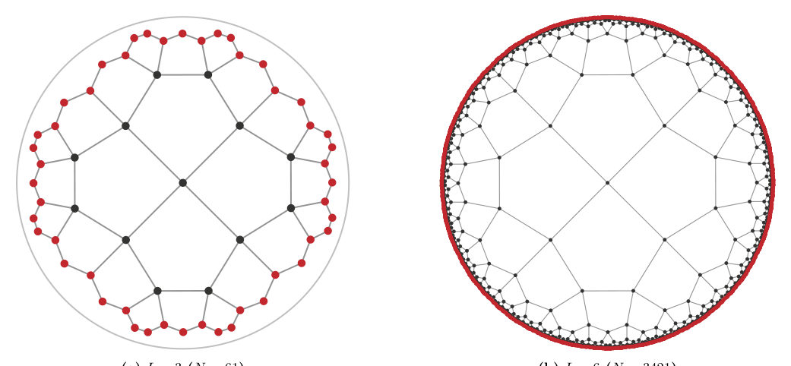
<figcaption class="paper-figure-caption"><b>Fig 1.</b> FIG. 1. The {5, 4} hyperbolic lattice on the Poincaré disk. Spins occupy the vertices of the tessellation, drawn here as the sites at which q = 4 pentagonal faces meet, so that interior sites (dark) have coordination zi = 4; boundary sites (red) belong to the outermost generation and have zi &lt; 4. (a) L = 3 (N = 61), with the pentagonal faces shaded to make the local connectivity explicit. (b) L = 6 (N = 3421); the exponential growth of the number of sites with each generation is apparent, and the boundary already occupies 73.3% of the lattice, close to the asymptotic value of Eq. (1), 73.21%.</figcaption>
</figure>
<figure class="paper-figure-card">
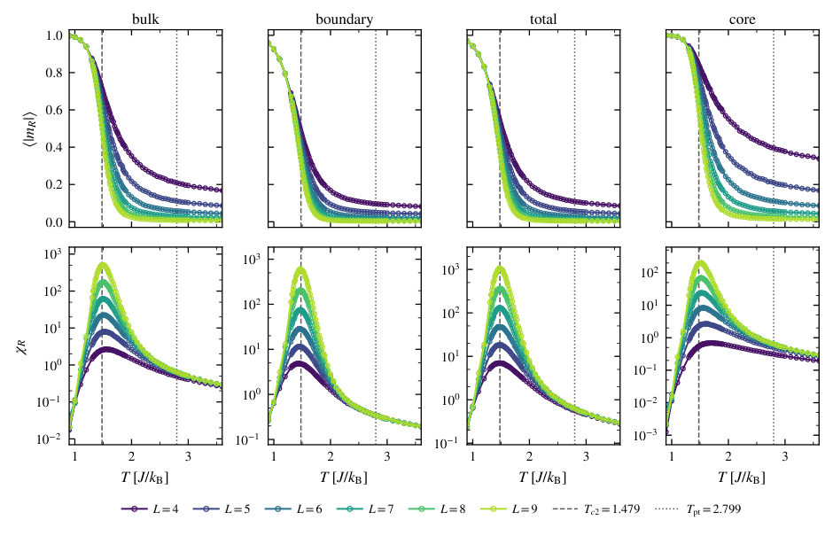
<figcaption class="paper-figure-caption"><b>Fig 2.</b> FIG. 2. Magnetization and susceptibility of the {5, 4} hyperbolic Ising model. ⟨|mR|⟩(top) and χR (bottom) for L = 4, . . . , 9 in the four regions of Sec. II. Since χR ∝NR and NR differs by up to three orders of magnitude between regions, the vertical scale of each susceptibility panel is set independently; the magnetization panels share a common scale. Vertical lines mark the published transition temperatures Tc2 = 1.479 [5] and Tpt = 2.799 [7]. The susceptibility maximum of the total system sits on Tc2 at every size; the maxima of the other three regions approach it from opposite sides (Sec. III B). No region shows any structure at Tpt (Sec. III F).</figcaption>
</figure>
<figure class="paper-figure-card">
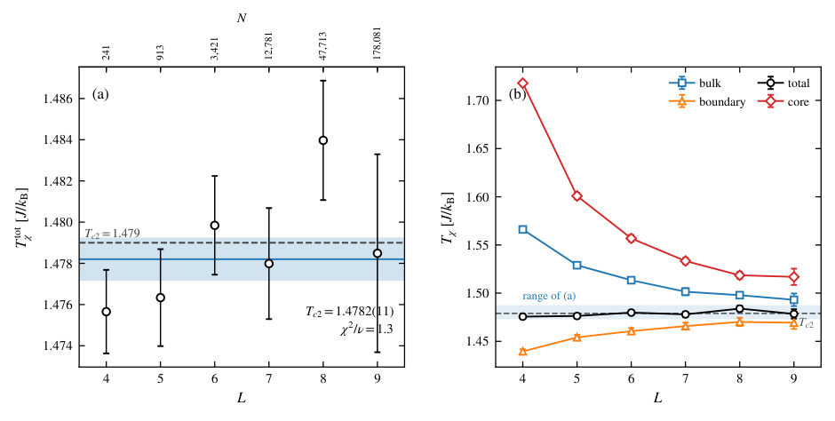
<figcaption class="paper-figure-caption"><b>Fig 3.</b> FIG. 3. The susceptibility peak requires no extrapolation. (a) Position of the maximum of χtotal against L, with the constant fit of Eq. (4) (band) and the published value Tc2 = 1.479 (dashed line). (b) The same for the four regions: bulk and core descend, boundary rises, total is flat, and all four extrapolate to the same place (Table II). The abscissa is the generation index; note that N spans more than two and a half decades across the panel.</figcaption>
</figure>
<figure class="paper-figure-card">
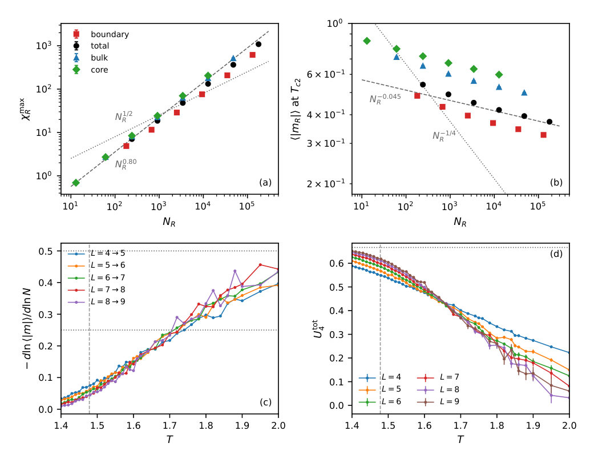
<figcaption class="paper-figure-caption"><b>Fig 4.</b> FIG. 4. Finite-size scaling of the order parameter. (a) Height of the susceptibility maximum against the number of sites of the region; the dashed line is N 0.80 R and the dotted line the mean-field N 1/2 R . (b) Magnetization at Tc2 against NR; the dashed line is N −0.045 R and the dotted line the mean-field N −1/4 R . (c) Local exponent of the total magnetization, −∆ln⟨|m|⟩/∆ln N, for the five size intervals as a function of temperature; horizontal lines mark the mean-field critical value 1/4 and the paramagnetic value 1/2, the vertical line marks Tc2. The five curves cross at T ∗≃1.67. (d) Binder cumulant of the total magnetization for the six sizes over the same range; the curves cross...</figcaption>
</figure>
<figure class="paper-figure-card">
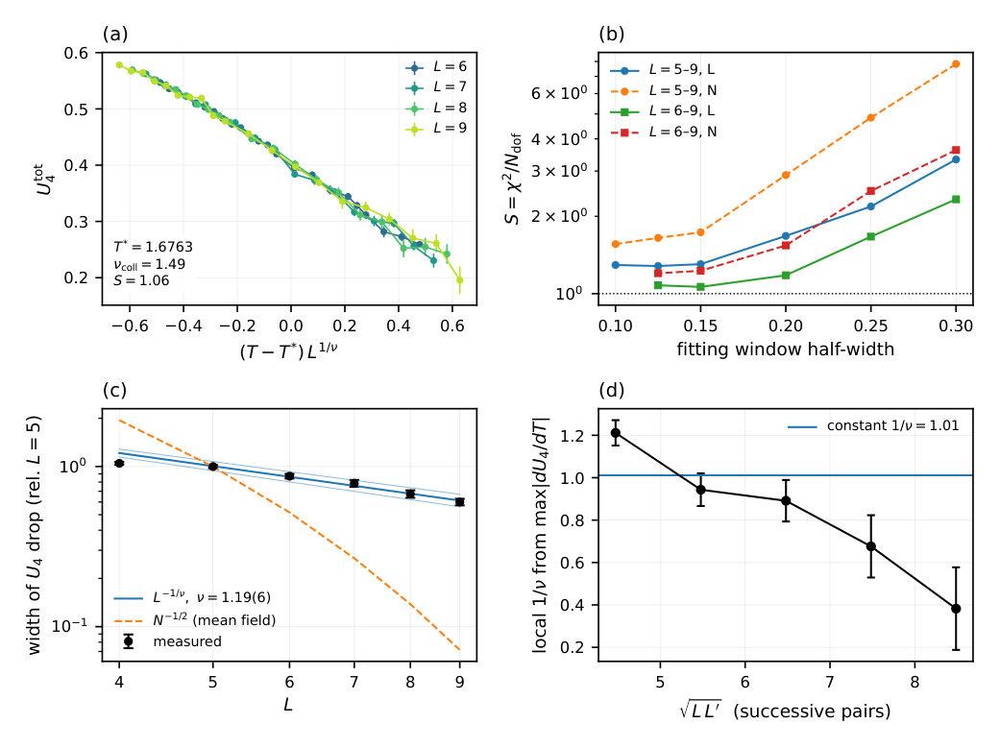
<figcaption class="paper-figure-caption"><b>Fig 5.</b> FIG. 5. Finite-size scaling of the Binder cumulant in the generation index. (a) Superposition of U tot 4 for L = 6–9 in the variable (T −T ∗)L1/ν, over a fitting window of half-width 0.15 about T ∗; the fitted values and the collapse statistic are quoted in the panel. (b) S = χ2/Ndof against the half-width of the fitting window, for two sets of sizes and for both candidate scaling variables. S falls as the window narrows and then stabilizes at S = 1.10(9) over the five narrowest windows of the L = 6–9 data in the variable L. Scaling in L lies below scaling in N at every window. (c) Width in temperature over which U tot 4 falls from 0.55 to 0.15, relative to L = 5, on logarithmic axes; the...</figcaption>
</figure>
</div>
<p><strong>Summary.</strong> This work investigates the Ising model on a hyperbolic lattice where boundary effects are dominant. The authors find that conventional methods reveal two distinct temperature scales, $T_{c2}$ and $T^*$, instead of a single critical point. They demonstrate that the true upper thermodynamic transition can only be accessed by applying a specific boundary perturbation.</p>
<p><strong>Why it may be interesting.</strong> The study provides a detailed case study of how boundary conditions fundamentally alter the identification of thermodynamic critical points in lattice models, which has implications for understanding open quantum systems or finite-size quantum simulations.</p>
<details>
<summary>Detailed structure</summary>
<p><strong>Main problem.</strong> To study the critical behavior and phase transitions of the Ising model on a hyperbolic lattice where boundary effects are macroscopic and dominate the system's average properties.</p>
<p><strong>Main result.</strong> The system exhibits two distinct temperature scales ($T_{c2}$ and $T^*$) rather than a single critical point, and the upper thermodynamic transition ($T_{pt}$) can be recovered by perturbing the boundary.</p>
<p><strong>Method.</strong> Monte Carlo simulations are used extensively, employing techniques like analyzing susceptibility peaks, Binder cumulant crossings, and applying coherent fields to probe different transition regimes.</p>
<p><strong>Model / system.</strong> The ferromagnetic Ising model is studied on the $\{5, 4\}$ hyperbolic lattice with free boundaries. The geometry ensures that the boundary sites constitute a fixed, macroscopic fraction of the total system volume.</p>
<p><strong>Key observables.</strong> Susceptibility ($\chi$), Binder cumulant crossings, order-parameter distribution, and the magnetization measured in different spatial regions (Boundary, Bulk, Core, Total).</p>
<p><strong>Important parameters / regimes.</strong> The lattice geometry ($\{5, 4\}$), the coupling constant $J/k_B$, and the identification of two distinct temperature scales: $T_{c2} \approx 1.48$ and $T^* \approx 1.67$.</p>
<p><strong>Assumptions / limitations.</strong> The analysis must account for the boundary-dependent nature of observables, necessitating finite-size scaling based on the generation index rather than total site count.</p>
<p><strong>Figures summary.</strong> Figures illustrate the hyperbolic lattice structure and show susceptibility and magnetization curves for different lattice sizes, highlighting the location of the susceptibility maximum and the crossing points for Binder cumulants.</p>
<p><strong>Paper structure.</strong> The paper systematically analyzes the system by first establishing the boundary-dependent nature of the averages, then identifying the lower transition scale ($T_{c2}$) via susceptibility, followed by locating a pseudocritical scale ($T^*$) using Binder cumulants, and finally recovering the upper transition ($T_{pt}$) via boundary perturbation.</p>
</details>
<details>
<summary>Abstract</summary>
<p>On the $\{5,4\}$ hyperbolic lattice, the outermost generation holds 73\% of the sites at all system sizes, making macroscopic averages strictly boundary-dependent. We study the ferromagnetic Ising model on this geometry with free boundaries by Monte Carlo simulation, demonstrating that conventional observables cease to identify a single critical scale. Instead, the finite lattices are organized by two distinct temperature scales. The susceptibility maximum identifies the lower transition scale at $T_{c2}=1.4782(15)J/k_{B}$ without extrapolation. However, the order-parameter distribution lacks a conventional fixed point at this scale. A distinct pseudocritical scale emerges instead at $T^{*}\simeq1.67(3)$ inside the boundary-sensitive intermediate phase, where Binder cumulant curves cross and effective exponents are compatible with mean-field criticality. Between $T_{c2}$ and $T^{*}$, the interior amplifies boundary fluctuations into induced order. Furthermore, because the volume grows exponentially with depth, finite-size scaling must be formulated in the generation index rather than the total number of sites. The lack of asymptotic power-law convergence in the scaling stretch confirms through an independent observable that $T^{*}$ is a finite-size crossover rather than a thermodynamic fixed point. Finally, by applying a coherent field to the outermost generation alone, we recover the upper thermodynamic transition at $T_{pt}=2.81(1)J/k_{B}$, demonstrating that it remains accessible under an appropriate boundary perturbation.</p>
</details>
<p><sub><a href="#top">↑ back to top</a></sub></p>

<p><a id="paper-2609.28760"></a></p>
<h3 id="walsh-transform-realization-of-dense-to-sparse-quantum-state-preparation"><a href="http://arxiv.org/abs/2609.28760v1">Walsh-Transform Realization of Dense-to-Sparse Quantum State Preparation</a></h3>
<p><strong>Authors:</strong> Emad Rezaei Fard Boosari<br>
<strong>Type:</strong> theory · <strong>Category:</strong> quantum information and computing · <strong>PDF:</strong> <a href="https://arxiv.org/pdf/2609.28760v1">https://arxiv.org/pdf/2609.28760v1</a><br>
<strong>Analysis basis:</strong> full PDF text, analyzed in chunks</p>
<div class="figure-strip-hint">↔ Scroll figures horizontally</div>
<div class="paper-figures-scroll">
<figure class="paper-figure-card">
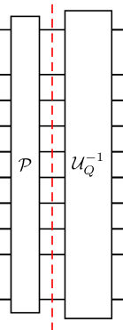
<figcaption class="paper-figure-caption"><b>Fig 1.</b> Figure 1: (a) General workflow of the DS-QSP framework. (b) Quantum circuit corresponding to the quantum stage of the framework.</figcaption>
</figure>
<figure class="paper-figure-card">
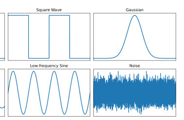
<figcaption class="paper-figure-caption"><b>Fig 2.</b> Figure 2: Representative one-dimensional benchmark signals used in the numerical experiments, spanning a range of structural characteristics from highly structured and Walsh-sparse signals to unstructured white noise.</figcaption>
</figure>
<figure class="paper-figure-card">
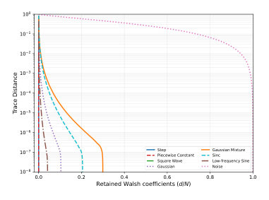
<figcaption class="paper-figure-caption"><b>Fig 3.</b> Figure 3: Walsh-domain compressibility and quantum-state reconstruction for the representative benchmark signals. (a) Sorted Walsh coefficient magnitudes for the eight benchmark signals. (b) Trace distance between the target and reconstructed quantum states as a function of the normalized number of retained Walsh coefficients d/N.</figcaption>
</figure>
<figure class="paper-figure-card">
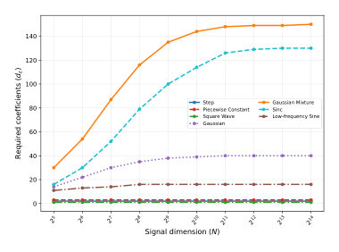
<figcaption class="paper-figure-caption"><b>Fig 4.</b> Figure 4: Scaling behavior of the proposed Walsh-based DS-QSP framework. (a) Minimum number of retained Walsh coefficients required to satisfy a fixed relative approximation tolerance of ϵ = 10−2 as the signal dimension increases from N = 25 to N = 214. (b) Minimum number of retained Walsh coefficients dϵ required to achieve different relative approximation tolerances ϵ for fixed signal dimension N = 214. The exactly Walsh-sparse signals remain at 1, 2, and 3 coefficients for the square-wave, step, and piecewise-constant signals, respectively. The low-frequency sinusoid increases from 5 to 206 coefficients as ϵ decreases from 10−1 to 10−5. At ϵ = 10−5, the Gaussian, sinc, and...</figcaption>
</figure>
<figure class="paper-figure-card">
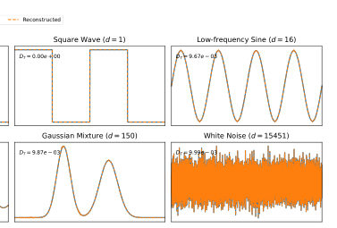
<figcaption class="paper-figure-caption"><b>Fig 5.</b> Figure 5: Original and Walsh-domain reconstructed benchmark signals for N = 16384 and relative approximation tolerance ϵ = 10−2. For each signal, the minimum number dϵ of largest-magnitude Walsh coefficients required to satisfy the prescribed tolerance is retained before applying the inverse WHT.</figcaption>
</figure>
</div>
<p><strong>Summary.</strong> This paper proposes a novel, efficient method for preparing quantum states representing structured classical data by employing the Walsh-Hadamard Transform (WHT) within a Dense-to-Sparse Quantum State Preparation framework. By performing the transformation classically and using the WHT's CNOT-free inverse, the authors eliminate significant gate overhead associated with direct state preparation. This demonstrates that quantum resources scale primarily with the inherent sparsity of the signal in the Walsh domain, making it highly efficient for structured inputs.</p>
<p><strong>Why it may be interesting.</strong> The focus on minimizing gate complexity and circuit depth by leveraging specific transforms like WHT is highly relevant to building practical, resource-efficient quantum algorithms for data processing.</p>
<details>
<summary>Detailed structure</summary>
<p><strong>Main problem.</strong> The paper addresses the challenge of efficiently preparing high-dimensional quantum states corresponding to structured classical data, circumventing the exponential gate overhead of direct state preparation.</p>
<p><strong>Main result.</strong> By utilizing the Walsh-Hadamard Transform (WHT) within a Dense-to-Sparse Quantum State Preparation (DS-QSP) framework, the authors achieve an efficient, deterministic preparation method with no additional CNOT or circuit-depth overhead in the decompression stage.</p>
<p><strong>Method.</strong> The method involves a three-stage process: transforming the classical data via WHT (classical compression), preparing the resulting sparse coefficients using a sparse QSP algorithm, and finally reconstructing the state using the CNOT-free inverse WHT.</p>
<p><strong>Model / system.</strong> The model is based on quantum circuits designed for quantum state preparation (QSP) of amplitude-encoded states. The system utilizes the WHT as the reversible classical transformation, which is implemented quantum mechanically via Hadamard gates.</p>
<p><strong>Key observables.</strong> Approximation Error (epsilon), total CNOT gate cost, and the trace distance between the prepared and target quantum states.</p>
<p><strong>Important parameters / regimes.</strong> The required sparsity level (d) relative to the full dimension (N), and the approximation tolerance (e.g., epsilon = 10^-2).</p>
<p><strong>Assumptions / limitations.</strong> The method provides an approximation due to information loss during coefficient thresholding, and its efficiency relies on the input signal having a sparse representation in the Walsh domain.</p>
<p><strong>Figures summary.</strong> Figures illustrate the general DS-QSP workflow, the quantum circuit structure, and benchmark results showing that structured signals require far fewer coefficients (d) for accurate reconstruction compared to white noise.</p>
<p><strong>Paper structure.</strong> The paper first introduces the general DS-QSP framework, then proposes and details the specific realization using the WHT. It analyzes the circuit costs, presents numerical results comparing various signal types (sparse vs. white noise), and concludes by discussing the modular nature of the approach.</p>
</details>
<details>
<summary>Abstract</summary>
<p>We propose a hybrid quantum state preparation method based on the Walsh--Hadamard transform within the dense-to-sparse quantum state preparation framework. The method approximately prepares structured classical data in a quantum circuit through an indirect approach. Instead of directly preparing the dense amplitude-encoded state, the method first transforms the classical data into the Walsh domain and prepares only the largest-magnitude coefficients using a sparse state-preparation algorithm. The original state can then be approximately recovered through a parallel layer of Hadamard gates. Since this reconstruction requires no CNOT gates and has circuit depth 1, the proposed method introduces no additional CNOT or circuit-depth overhead, and its quantum preparation cost is determined by the underlying sparse state-preparation algorithm. Numerical results on representative benchmark signals demonstrate that the proposed method enables accurate state preparation for signals admitting sparse or approximately sparse representations in the Walsh domain.</p>
</details>
<p><sub><a href="#top">↑ back to top</a></sub></p>

<p><a id="paper-2609.28630"></a></p>
<h3 id="weak-coupling-pair-density-wave-from-momentum-space-nonsymmorphic-symmetry"><a href="http://arxiv.org/abs/2609.28630v1">Weak-Coupling Pair-Density-Wave from Momentum-Space Nonsymmorphic Symmetry</a></h3>
<p><strong>Authors:</strong> Ming-Rui Li, Zhengzhi Wu, Hong Yao<br>
<strong>Type:</strong> theory · <strong>Category:</strong> strongly correlated electrons · <strong>PDF:</strong> <a href="https://arxiv.org/pdf/2609.28630v1">https://arxiv.org/pdf/2609.28630v1</a><br>
<strong>Analysis basis:</strong> full PDF text, analyzed in chunks</p>
<div class="figure-strip-hint">↔ Scroll figures horizontally</div>
<div class="paper-figures-scroll">
<figure class="paper-figure-card">
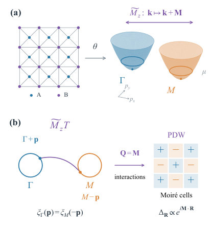
<figcaption class="paper-figure-caption"><b>Fig 1.</b> FIG. 1. Nonsymmorphic particle-particle nesting and PDW pairing in the TBCB model. (a) Single-layer checkerboard lattice and local dispersions near the symmetry-related Γ and M QBTs in the TBCB away from the magic-angle limit. The contours illustrate Fermi pockets generated by finite dop- ing. (b) The combined symmetry e MzT relates equal-energy states at Γ + p and M −p, forming a Cooper pair with Q = M = (π, π). This symmetry-enforced particle-particle nesting preserves the finite-Q Cooper logarithm. The alter- nating signs illustrate the resulting checkerboard modulation of the PDW phase.</figcaption>
</figure>
<figure class="paper-figure-card">
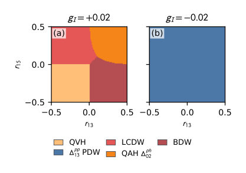
<figcaption class="paper-figure-caption"><b>Fig 2.</b> FIG. 2. Spinless charge-neutral RG source maps for (a) gI = +0.02 and (b) gI = −0.02. The ratios r13 = g13/|gI| and r15 = g15/|gI| measure inter-valley exchange relative to forward scattering; band form factors make them O(1) for short-range and smaller for smooth interactions. We use the representative weak-coupling window |gI| = 0.02 and r13, r15 ∈[−0.5, 0.5]. Colors indicate the leading RG source at the common cutoff ∥D0g(ℓ⋆)∥2 = 1, determined from its in- tegrated interaction-induced enhancement along the RG flow.</figcaption>
</figure>
<figure class="paper-figure-card">
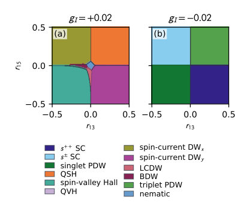
<figcaption class="paper-figure-caption"><b>Fig 3.</b> FIG. 3. Spin-1/2 charge-neutral RG source maps for (a) gI = +0.02 and (b) gI = −0.02, with r13 = g13/|gI| and r15 = g15/|gI|. Colors indicate the leading RG source among all charge, spin, and singlet/triplet-pairing channels at the common cutoff ∥D0g(ℓ⋆)∥2 = 1; thin lines mark boundaries between leading-source regions.</figcaption>
</figure>
<figure class="paper-figure-card">
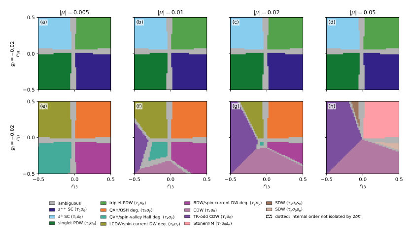
<figcaption class="paper-figure-caption"><b>Fig 4.</b> FIG. 4. Spinful full-component BSE at finite doping with a fixed antisymmetrized (gI, g13, g15) vertex at gI = −0.02, +0.02 (rows) and |µ| = 0.005, 0.010, 0.020, and 0.050 (columns), with T = 0.001 and Ec = 0.1. The axes are r13 = g13/|gI| and r15 = g15/|gI|. Colors identify the resolved leading family and its dominant order-matrix component among the PP and PH blocks at Q = 0, M. Exactly degenerate charge and spin PH channels share a joint label. Gray points have no resolved family winner, whereas the dotted overlay marks a resolved family whose internal order matrix is not spectrally isolated. The quantitative assignment criteria and the corresponding spinless map are given in the...</figcaption>
</figure>
<figure class="paper-figure-card">
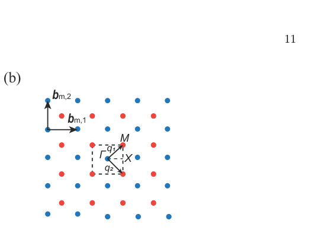
<figcaption class="paper-figure-caption"><b>Fig 5.</b> FIG. 5. MiniBZ of the TBCB model</figcaption>
</figure>
</div>
<p><strong>Summary.</strong> This work establishes that momentum-space nonsymmorphic symmetry is a general weak-coupling route to realizing Pair-Density-Wave (PDW) superconductivity in systems like the TBCB lattice. Using RG and BSE analyses, the authors show this symmetry protects the PDW instability upon doping and allows for the creation of novel topological superconducting phases with quantized Chern numbers.</p>
<p><strong>Why it may be interesting.</strong> The explicit connection between a specific lattice symmetry (momentum-space nonsymmorphic symmetry) and the stabilization of a complex superconducting state (PDW) provides a powerful, symmetry-enforced mechanism for unconventional superconductivity, relevant to correlated materials research.</p>
<details>
<summary>Detailed structure</summary>
<p><strong>Main problem.</strong> The paper addresses the challenge of finding a generic, weak-coupling mechanism to stabilize Pair-Density-Wave (PDW) order, which is often subleading in conventional BCS theory.</p>
<p><strong>Main result.</strong> Momentum-space nonsymmorphic symmetry provides a general mechanism that promotes PDW order to a leading weak-coupling instability across a broad doping range, and this mechanism extends to realize topological PDW states in moiré Chern bands.</p>
<p><strong>Method.</strong> The study employs a combination of Wilsonian Renormalization Group (RG) analysis and the full-component Bethe–Salpeter equation (BSE) analysis to map out competing instabilities.</p>
<p><strong>Model / system.</strong> The primary model is the Twisted Bilayer Checkerboard (TBCB) lattice, analyzed first with spinless fermions and then extended to spin-1/2 fermions. The analysis focuses on low-energy physics derived from symmetry-protected quadratic band touchings (QBTs).</p>
<p><strong>Key observables.</strong> Leading instability type (e.g., PDW, QAH, CDW), superconducting gaps ($    ext{s}^{++},    ext{s}^{\pm}$), and the topological invariant, the BdG Chern number ($C_{  ext{BdG}}$).</p>
<p><strong>Important parameters / regimes.</strong> Doping level ($\mu$), coupling strengths ($g_I, g_{13}, g_{15}$), and the presence/breaking of time-reversal symmetry.</p>
<p><strong>Assumptions / limitations.</strong> The analysis relies on projecting amplitudes onto exact Bloch states and treating the effective low-energy couplings as the primary variables for RG flow.</p>
<p><strong>Figures summary.</strong> Figures illustrate RG source maps showing competing instabilities based on coupling strengths, and the final BSE phase diagram maps the leading ordered phase across varying doping levels.</p>
<p><strong>Paper structure.</strong> The paper progresses from establishing the general RG framework for instabilities (spinless case) to solving the full-component BSE at finite doping (spin-1/2 case), culminating in the demonstration of topological PDW states.</p>
</details>
<details>
<summary>Abstract</summary>
<p>Pair-density-wave (PDW) order is a superconducting state with a spatially modulated order parameter and is generally subleading to uniform superconductivity within the conventional weak-coupling BCS paradigm. Here, using a twisted bilayer checkerboard-lattice model, we show that momentum-space nonsymmorphic symmetry provides a generic mechanism that can instead promote PDW order to a leading weak-coupling instability. Combining a controlled Wilsonian renormalization-group analysis at charge neutrality with a finite-doping Bethe--Salpeter analysis, we determine the leading ordering tendencies among various competing instabilities. At charge neutrality, two symmetry-related quadratic band touchings support spin-singlet and spin-triplet PDW instabilities for different attractive interactions, whereas repulsive interactions favor quantum Hall insulators and finite-$\mathbf Q$ density-wave orders. Upon doping, the nonsymmorphic symmetry, together with time reversal, protects the Cooper logarithm in the finite-momentum $\mathbf Q$ pairing channel at generic fillings, allowing PDW order to remain a leading instability over the broad doping range studied. This mechanism extends naturally to moiré Chern bands: by breaking time-reversal symmetry while preserving the nonsymmorphic symmetry and inversion, we obtain a fully gapped topological spin-triplet PDW state with BdG Chern number $C_{\text{BdG}}=8$. Our results establish momentum-space nonsymmorphic symmetry as a general weak-coupling route to PDW superconductivity, including topological PDW states.</p>
</details>
<p><sub><a href="#top">↑ back to top</a></sub></p>
</details>
<h2 id="secondary-cond-mat-archives">Secondary cond-mat archives</h2>
<p><em>Papers from cond-mat.mtrl-sci, mes-hall, other, soft, supr-con. These archives are de-prioritized — they appear at the end regardless of relevance score.</em></p>
<h3 id="relevant-in-secondary-archives-25">Relevant in secondary archives (25)</h3>

<p><a id="paper-2609.30000"></a></p>
<h3 id="real-axis-least-squares-bath-discretization-for-real-time-transport-in-quantum-dot-josephson-junctions"><a href="http://arxiv.org/abs/2609.30000v1">Real-axis least-squares bath discretization for real-time transport in quantum-dot Josephson junctions</a></h3>
<p><strong>Authors:</strong> Ruixin Zhou, Bing Dong, Yiyan Wang<br>
<strong>Type:</strong> theory · <strong>Category:</strong> other · <strong>PDF:</strong> <a href="https://arxiv.org/pdf/2609.30000v1">https://arxiv.org/pdf/2609.30000v1</a><br>
<strong>Analysis basis:</strong> full PDF text, analyzed in chunks
<strong>Topic relevance:</strong> 🔥 <code>methods for driven-dissipative</code> <strong>4/5</strong> · <code>Keldysh / 2PI / non-Gaussian methods</code> <strong>3/5</strong> · <code>correlated / nonlocal dissipation</code> <strong>1/5</strong> · <code>driven-dissipative phase transition</code> <strong>1/5</strong> · <code>quantum measurements</code> <strong>1/5</strong></p>
<div class="figure-strip-hint">↔ Scroll figures horizontally</div>
<div class="paper-figures-scroll">
<figure class="paper-figure-card">
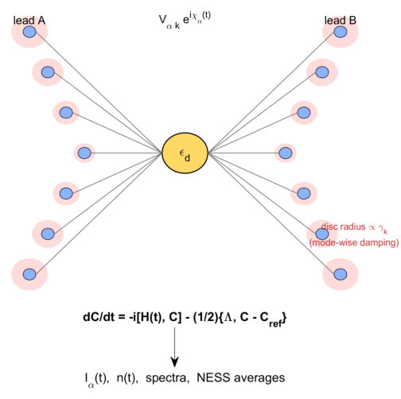
<figcaption class="paper-figure-caption"><b>Fig 1.</b> FIG. 1. System and workflow. A noninteracting quantum dot (εd) is coupled to two superconducting leads (A, B), each car- rying the time-dependent phase χα(t) under bias or drive and represented by a fan of damped bath modes whose disc ra- dius sketches the mode-resolved damping γj (gap-edge modes take small dampings that protect long-lived subgap physics, in-band modes take large dampings that do the absorbing; the γj structure is detailed in SM Sec. S3). The discretized bath is propagated with the driven Liouville–von Neumann equation (4), and observables (bond currents Iα(t), occupa- tion n(t), spectra, steady-state averages) are read from the single-particle correlation matrix.</figcaption>
</figure>
<figure class="paper-figure-card">
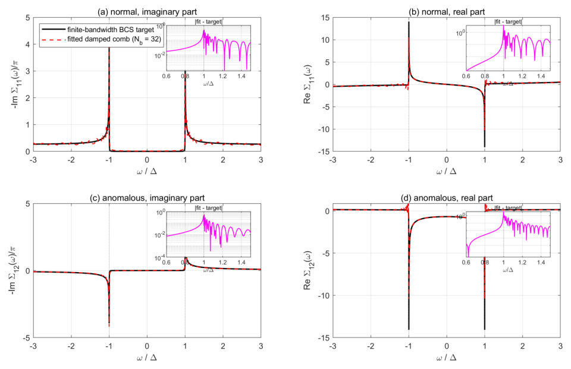
<figcaption class="paper-figure-caption"><b>Fig 2.</b> FIG. 2. Least-squares fit of the finite-bandwidth BCS hybridization self-energy on the Nambu components the objective acts on [Eq. (7)]: (a) −Im Σ11(ω)/π and (b) Re Σ11(ω) (normal component), (c) −Im Σ12(ω)/π and (d) Re Σ12(ω) (anomalous component); target (black) versus the fitted damped comb of a least-squares Nb = 32 bath (red dashed). The comb is by construction a sum of single-mode Lorentzian profiles acting jointly on the real and imaginary parts of the three independent Nambu components (Σ11, Σ12, Σ22) that enter the objective; the four panels display the real and imaginary parts of the two shown here, Σ11 and Σ12. Each inset shows the pointwise error |Σfit −Σtarget| near the gap...</figcaption>
</figure>
<figure class="paper-figure-card">
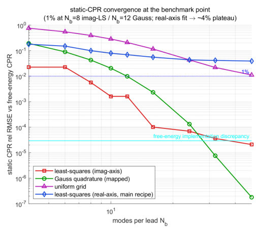
<figcaption class="paper-figure-caption"><b>Fig 3.</b> FIG. 3. Static-CPR convergence of the discretization schemes at the benchmark point: 1% at Nb = 8 (least squares, imaginary-axis variant) and Nb = 12 (Gauss); the uniform grid and the real-axis main recipe converge as ∼1/Nb, the latter saturating near 4% (transport-window truncation, Sec. III A). The horizontal line indicates the relative discrep- ancy between the two independent free-energy-CPR imple- mentations. Parameters in SM Sec. S1.</figcaption>
</figure>
<figure class="paper-figure-card">
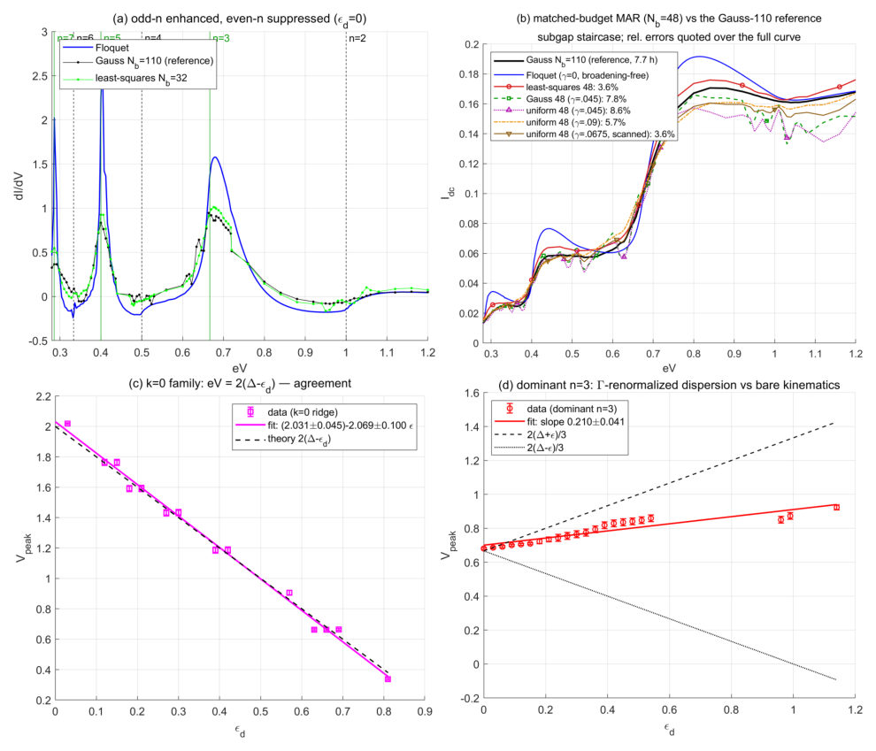
<figcaption class="paper-figure-caption"><b>Fig 4.</b> FIG. 4. MAR parity, matched-budget comparison, and dispersion. (a) dI/dV at εd = 0 over the subgap staircase (eV ≤1.2∆, the multiple-Andreev regime n ≥2): odd-order enhancement; peak positions match Floquet to the bias-grid resolution. (b) Matched-budget MAR benchmark (Nb = 48 per lead) against the Gauss-110 reference over the subgap staircase: least squares 3.6%, uniform 5.7–8.6% (γ-dependent), Gauss 7.8% (full-curve relative errors); the a posteriori γ-scanned uniform tie point (γ = 0.0675; SM Sec. S8) and broadening-free Floquet (γ = 0) are overlaid—least squares and Gauss-110 track Floquet to 7–10% over this subgap window (the finite-γ offset shared by all baths), while the full-curve...</figcaption>
</figure>
<figure class="paper-figure-card">
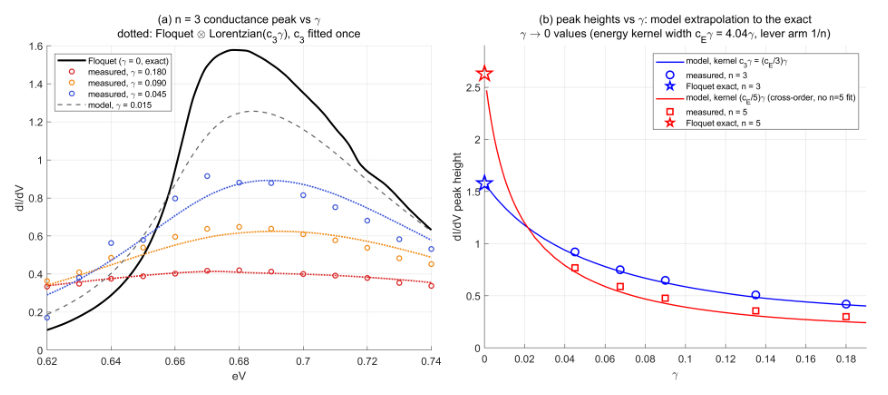
<figcaption class="paper-figure-caption"><b>Fig 5.</b> FIG. 5. γ scaling of the MAR conductance peaks (the Gaussian reference bath, whose single global γ provides the knob for the extrapolation; the least-squares bath’s per-mode γj has no single damping to sweep). (a) The n = 3 peak: measured dI/dV at three dampings (circles) against the exact Floquet curve convolved with a truncated, renormalized Lorentzian-core kernel of width c3γ (dotted; the single linewidth coefficient c3 = 1.35 fitted once on the full five-rung family after fixing the semi- empirical locality scale R; kernel convention and leave-rung-out stability check in SM Sec. S8); the model’s small-γ member (dashed) merges into the exact curve. (b) Peak heights versus γ for the n = 3...</figcaption>
</figure>
</div>

<p><strong>Summary.</strong> This paper presents a novel, highly efficient real-time simulation technique for quantum-dot Josephson junctions by optimizing the bath discretization using a least-squares approach. This method overcomes limitations of previous techniques by treating the numerical broadening parameter independently, leading to massive computational savings. It successfully reproduces key superconducting transport signatures while providing a robust framework for future extensions to interacting systems.</p>
<p><strong>Why it may be interesting.</strong> This work provides a highly advanced, computationally efficient numerical tool for simulating open quantum systems coupled to superconducting leads, which is central to quantum electronics and superconducting circuit QED.</p>
<details>
<summary>Detailed structure</summary>
<p><strong>Main problem.</strong> The paper addresses the challenge of developing efficient, accurate real-time simulation methods for nonlinear transport in driven superconducting nanostructures.</p>
<p><strong>Main result.</strong> They introduce a novel real-axis least-squares bath discretization that significantly reduces computational cost while accurately recovering established superconducting transport phenomena.</p>
<p><strong>Method.</strong> The authors extend the driven Liouville-von Neumann approach by formulating the bath discretization as a constrained nonlinear least-squares optimization problem.</p>
<p><strong>Model / system.</strong> The system is a noninteracting quantum dot Josephson junction coupled to superconducting leads, modeled using the Bogoliubov-de Gennes formalism in the Nambu basis.</p>
<p><strong>Key observables.</strong> Current-phase relations (CPR), multiple-Andreev-reflection (MAR) structure, quasiparticle-trapping oscillations, and Shapiro locking amplitudes.</p>
<p><strong>Important parameters / regimes.</strong> The independently calibrated numerical broadening parameter ($\gamma$), the ratio $\kappa \simeq w_{	ext{bath}}\gamma_{	ext{eff}}$, and the joint refinement path $(\gamma 	o 0, N_b 	o \infty)$.</p>
<p><strong>Assumptions / limitations.</strong> The dot is treated as noninteracting ($U=0$), and the method relies on careful gauge selection (hopping-phase gauge) when implementing damping in the DLvN framework.</p>
<p><strong>Figures summary.</strong> Figures illustrate the system setup, the locking map on the LS-32 bath, and comparisons of static CPRs against continuum benchmarks.</p>
<p><strong>Paper structure.</strong> The paper details the Hamiltonian model (Section II.A), the superconducting DLvN formulation (Section II.B), and the core least-squares bath framework (Section II.C), followed by extensive validation of observables and comparisons with other methods in Section III.</p>
</details>
<details>
<summary>Abstract</summary>
<p>Efficient real-time methods are essential for resolving transient coherence and nonlinear transport in driven superconducting nanostructures. Such simulations remain challenging because finite representations of the BCS continuum generate recurrences, while the damping used to suppress them smears gap-edge structure and artificially shortens coherent lifetimes; finite-broadening regularization of the gap-edge singularity likewise imposes a lifetime-resolution floor. Here we extend the driven Liouville--von Neumann approach to superconducting reservoirs---a noninteracting quantum dot with Bogoliubov--de Gennes leads---building an explicit-Hamiltonian framework that hosts a family of bath discretizations (uniform and Gaussian baselines and a new real-axis least-squares recipe, with mode energies, spectral weights, and mode-resolved dampings optimized jointly under gap-aware constraints)---making the broadening an independently calibrated numerical parameter whose leading long-time effect extrapolates controllably along the joint ($γ\to0$, $N_b\to\infty$) refinement path while cutting computational cost by over an order of magnitude versus the high-resolution DLvN reference. The compressed baths recover established current-phase relations, multiple-Andreev-reflection structure, quasiparticle-trapping oscillations, and integer and fractional Shapiro locking; the lifetime analysis yields the parameter-free leading-order relation $κ\simeq w_{\mathrm{bath}}γ_{\mathrm{eff}}$ and resolves damping-induced decay rates below the resolution scale of a previous finite-broadening calculation. As an explicit Hamiltonian reservoir representation, the framework generalizes naturally to multiterminal normal--superconducting geometries and offers a route toward interacting impurity solvers, while finite-gap strong-drive locking amplitudes mark its present quantitative boundary.</p>
</details>
<p><sub><a href="#top">↑ back to top</a></sub></p>

<p><a id="paper-2609.29229"></a></p>
<h3 id="adiabatic-theory-data-on-strongly-chirped-dissipative-solitons-of-the-cubic-quintic-nonlinear-ginzburg-landau-equation"><a href="http://arxiv.org/abs/2609.29229v1">Adiabatic Theory Data on Strongly Chirped Dissipative Solitons of the Cubic-Quintic Nonlinear Ginzburg-Landau Equation</a></h3>
<p><strong>Authors:</strong> V. L. Kalashnikov, E. Sorokin, A. Rudenkov, I. T. Sorokina<br>
<strong>Type:</strong> theory · <strong>Category:</strong> other · <strong>PDF:</strong> <a href="https://arxiv.org/pdf/2609.29229v1">https://arxiv.org/pdf/2609.29229v1</a><br>
<strong>Analysis basis:</strong> full PDF text, analyzed in chunks
<strong>Topic relevance:</strong> <code>Keldysh / 2PI / non-Gaussian methods</code> <strong>3/5</strong> · <code>driven-dissipative phase transition</code> <strong>3/5</strong> · <code>methods for driven-dissipative</code> <strong>3/5</strong> · <code>correlated / nonlocal dissipation</code> <strong>2/5</strong> · <code>non-equilibrium universality</code> <strong>2/5</strong> · <code>analog quantum simulation</code> <strong>1/5</strong> · <code>quantum measurements</code> <strong>1/5</strong></p>
<div class="figure-strip-hint">↔ Scroll figures horizontally</div>
<div class="paper-figures-scroll">
<figure class="paper-figure-card">
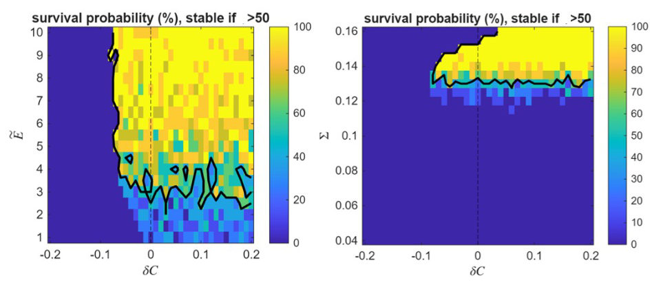
<figcaption class="paper-figure-caption"><b>Fig 1.</b> Figure 1. Stability regions of the analytical strongly chirped AGD-DS under quantum-noise perturbations. The stability criterion is P_ surv &gt;50%, where P_ surv is the fraction of noisy realizations that remain single-pulse, do not reach the perturbation cutoff ∥δa∥/∥a_0∥=0.25, and retain high spectral correlation with the analytical reference over the propagation interval. Yellow denotes the stable/long-lived region, and blue denotes unstable points. The vertical dashed line marks the AGD-- DSR condition δC =0, where C =-1 /~χ +δC. Parameters common to both panels are ~χ =1.5, κ / γ =0.1, ζ / γ =0.39, and α =Cβκ / γ (see Eqs. (1,2)). (a): Stability map in the ~E ,δC plane at fixed Σ=0.14....</figcaption>
</figure>
<figure class="paper-figure-card">

<figcaption class="paper-figure-caption"><b>Fig 2.</b> Figure 2. DS power envelope (upper-left) and spectral profile (upper-right) for analytical solution (solid blue) and noisy perturbed one (dashed red). The bottom-left histogram demonstrates the spectral correlation of the shots with high Psurv from 64 independent noise realizations. The bottom-right histogram demonstrates the corresponding dimensionless energy distribution. The dimensionless energy equals ~E=8, C =-0.67, δC =-0.01, Σ=0.14, ~χ =1.5. Other parameters correspond to Figure 1.</figcaption>
</figure>
</div>

<p><strong>Summary.</strong> This work delivers a comprehensive data package and theoretical framework for studying strongly chirped dissipative solitons governed by the cubic-quintic Ginzburg-Landau equation. It details methods to calculate spectral properties and map out the stability boundaries under quantum noise in both normal and anomalous dispersion regimes. The resource is valuable for researchers needing to benchmark numerical simulations in nonlinear wave physics.</p>
<p><strong>Why it may be interesting.</strong> The detailed mathematical machinery, involving spectral analysis and stability mapping under noise, is highly relevant to open quantum systems and nonlinear wave dynamics, bridging quantum optics and nonlinear PDEs.</p>
<details>
<summary>Detailed structure</summary>
<p><strong>Main problem.</strong> The paper provides comprehensive datasets and analytical tools to reproduce complex spectral and stability analyses for strongly chirped dissipative solitons.</p>
<p><strong>Main result.</strong> The analysis characterizes the existence, spectral properties, and quantum-noise stability regions of these solitons across normal and anomalous dispersion regimes.</p>
<p><strong>Method.</strong> The study employs adiabatic theory, stationary-phase approximations, uniformization techniques, and stochastic propagation simulations to analyze the nonlinear evolution.</p>
<p><strong>Model / system.</strong> The system is governed by the cubic-quintic complex Ginzburg-Landau equation (CGLE), modeling dissipative solitons in nonlinear wave propagation.</p>
<p><strong>Key observables.</strong> Stationary-phase spectra, windowed first-order coherence functions, quantum-noise stability maps, and energy ($    ext{ENGD}(  ilde{\chi})$).</p>
<p><strong>Important parameters / regimes.</strong> Dispersion regimes (Normal/Anomalous), normalized control parameters ($\Sigma, \delta C$), and the chirp parameter ($  ilde{\chi}$).</p>
<p><strong>Assumptions / limitations.</strong> The analysis relies on the adiabatic approximation (large-chirp limit) and the use of finite-time stochastic classification for stability.</p>
<p><strong>Figures summary.</strong> Figure 1 maps stability regions in parameter space under quantum noise; Figure 2 compares the analytical soliton profile against its noisy, perturbed realization.</p>
<p><strong>Paper structure.</strong> The structure moves from defining the CGLE and its parameters, through deriving analytical approximations for energy and spectral features (SPA, uniformization), to analyzing the stability via stochastic simulation and presenting the final data repository.</p>
</details>
<details>
<summary>Abstract</summary>
<p>This data article provides the datasets, symbolic derivations, and scripts used to reproduce master diagrams, stationary-phase spectra, windowed first-order coherence functions, and quantum-noise stability maps for strongly chirped dissipative solitons of the cubic-quintic complex Ginzburg-Landau equation in normal and anomalous group-delay dispersion regimes. The repository includes node-regularized normal-dispersion spectra and energies; small-parameter expansions of the branch roots; cavity-map gain-loss update relations; Airy uniformization at the normal-dispersion spectral edge; anomalous-dispersion spectra and coherence calculations; and processed tables for plotting and stability analysis. OriginLab projects are accompanied by open-format .csv/.txt numerical tables to support reuse without proprietary plotting software. Data and code repository: https://doi.org/10.5281/zenodo.22690899.</p>
</details>
<p><sub><a href="#top">↑ back to top</a></sub></p>

<p><a id="paper-2609.29722"></a></p>
<h3 id="cavity-waveguide-coupling-in-phononic-crystals"><a href="http://arxiv.org/abs/2609.29722v1">Cavity-waveguide coupling in phononic crystals</a></h3>
<p><strong>Authors:</strong> Jakub Rosińński, Benjamin Mayer, Hubert J. Krenner, Paweł Machnikowski<br>
<strong>Type:</strong> both · <strong>Category:</strong> quantum information and computing · <strong>PDF:</strong> <a href="https://arxiv.org/pdf/2609.29722v1">https://arxiv.org/pdf/2609.29722v1</a><br>
<strong>Analysis basis:</strong> full PDF text, analyzed in chunks
<strong>Topic relevance:</strong> <code>QC/QI experiment</code> <strong>3/5</strong> · <code>analog quantum simulation</code> <strong>3/5</strong> · <code>quantum optics experiment</code> <strong>3/5</strong> · <code>Tavis-Cummings &amp; cavity-many-emitter</code> <strong>1/5</strong> · <code>correlated / nonlocal dissipation</code> <strong>1/5</strong> · <code>driven-dissipative phase transition</code> <strong>1/5</strong> · <code>methods for driven-dissipative</code> <strong>1/5</strong> · <code>quantum measurements</code> <strong>1/5</strong></p>
<div class="figure-strip-hint">↔ Scroll figures horizontally</div>
<div class="paper-figures-scroll">
<figure class="paper-figure-card">

<figcaption class="paper-figure-caption"><b>Fig 1.</b> FIG. 1. (a) Three phononic cavity designs (L0, L1, L2) realized in the snowflake-based PhC, with the geometric parameters 𝑎, 𝑟, and 𝑤 indicated. (b) Symmetry planes of the cavities. (c) Schematic of the L0 cavity coupled to the W1m waveguide. The waveguide core width is controlled by the parameter 𝑏, while M1, M2, and M3 indicate three cavity positions corresponding to different cavity–waveguide separations. The yellow regions indicate the integration domains used to evaluate the overlap integral between the L0 cavity and the W1m waveguide, illustrated for the M1 separation.</figcaption>
</figure>
<figure class="paper-figure-card">

<figcaption class="paper-figure-caption"><b>Fig 2.</b> FIG. 2. Cavity and waveguide modes in the PhC. (a) Eigenfrequencies of the localized cavity modes for the three cavity designs L2, L1, and L0. Insets show the corresponding cavity geometries. (b) Dispersion relations of the guided modes in the PhC waveguide. The gray shaded regions in (a) and (b) denote PhC bands. (c) Group velocities 𝑣g of the four waveguide modes versus wavenumber. Colors indicate the mode symmetry with respect to the 𝜎𝑧and 𝜎𝑦mirror planes. For the cavity modes in panel (a), which additionally possess 𝜎𝑥symmetry, solid and dashed lines distinguish modes that are symmetric (S) and antisymmetric (A) with respect to 𝜎𝑥, respectively.</figcaption>
</figure>
<figure class="paper-figure-card">

<figcaption class="paper-figure-caption"><b>Fig 3.</b> FIG. 3. Dispersion diagram showing two anticrossings between the AAS cavity mode and waveguide modes with matching symmetry, corresponding to identical parity with respect to the 𝜎𝑧plane: the AA branch in panel (a) and the AS branch in panel (b). Red dots denote modes identified as cavity-like, green circles correspond to the AS waveguide mode, and purple circles to the AA waveguide mode. Black solid lines are cubic-spline fits used to determine the minimum frequency splitting. Blue dashed vertical lines mark the Bloch wavenumbers at which the anticrossings occur, and the ex- tracted coupling strengths 2𝑔are indicated above each panel.</figcaption>
</figure>
<figure class="paper-figure-card">

<figcaption class="paper-figure-caption"><b>Fig 4.</b> Figure 3 illustrates the procedure used to extract the coupling strength 2𝑔from avoided crossings in the dispersion relation, shown here for a representative example involving the AAS cavity mode, with further details provided in Appendix C. Two distinct anticrossings arise from the interaction of the AAS mode with the AA waveguide branch [Fig. 3(a)] and the AS waveguide branch [Fig. 3(b)]. Notably, the interaction of the AAS mode with the AA branch yields a significantly larger coupling strength (2𝑔= 2.164 MHz) than with the AS branch (2𝑔= 1.069 MHz). This difference appears to be primarily</figcaption>
</figure>
<figure class="paper-figure-card">

<figcaption class="paper-figure-caption"><b>Fig 5.</b> FIG. 4. Correlation between the extracted coupling strength 2𝑔and the rescaled spatial overlap integral 𝜂√𝑚eff for all anticrossings of the L0 cavity except those involving the ASA mode. Data are grouped by parity with respect to the horizontal mirror plane 𝜎𝑧, with symmetric modes shown in panel (a) and antisymmetric modes in panel (b), corresponding to the first symmetry labels S and A, respectively. The corresponding Pearson correlation coefficients are 𝑟= 0.93 and 𝑟= 0.99, respectively.</figcaption>
</figure>
</div>

<p><strong>Summary.</strong> This paper investigates the fundamental physics governing mechanical coupling between localized cavities and propagating waveguides in phononic crystals. Using both finite-element simulations and experimental measurements on GaAs, the authors establish that the coupling strength is predominantly determined by the spatial overlap of the involved vibrational modes. This work provides critical design guidelines for realizing solid-state quantum networks based on phononic interactions.</p>
<p><strong>Why it may be interesting.</strong> This work provides concrete, quantitative design rules—namely, maximizing spatial mode overlap—for engineering solid-state quantum interconnects using phononics, which is crucial for building scalable quantum networks.</p>
<details>
<summary>Detailed structure</summary>
<p><strong>Main problem.</strong> The core problem is understanding and controlling the coupling strength between localized mechanical modes (cavities) and propagating phononic modes (waveguides) within phononic crystals for use in scalable on-chip quantum networks.</p>
<p><strong>Main result.</strong> The coupling strength is found to be primarily governed by the spatial overlap between the displacement fields of the isolated cavity and waveguide modes. Experimentally, a clear resonance was observed in the photoluminescence broadening matching simulation predictions.</p>
<p><strong>Method.</strong> The study employs a combination of finite-element simulations (FEM) to model coupling strength via avoided crossings and experimental measurements using embedded quantum dots (QDs) as local mechanical field probes.</p>
<p><strong>Model / system.</strong> The system involves phononic crystals realized in GaAs, featuring snowflake-type cavities coupled to a waveguide. The interaction mediates coupling between solid-state qubits (like QDs) via mechanical excitations (phonons).</p>
<p><strong>Key observables.</strong> Coupling strength (quantified by frequency splitting $\Delta f$), spatial overlap integral ($\eta$), and spectral broadening of photoluminescence emission.</p>
<p><strong>Important parameters / regimes.</strong> Lattice constant ($a$), cavity radius ($r$), waveguide group velocity ($v_g$), and the spatial overlap integral $\eta$.</p>
<p><strong>Assumptions / limitations.</strong> The initial analysis focuses on the leading-order behavior governed by spatial mode overlap, with deviations attributed to Bloch-phase effects and hybridization.</p>
<p><strong>Figures summary.</strong> Figures illustrate the geometry of the coupled system, show calculated dispersion relations revealing avoided crossings, and present experimental false-color plots showing QD emission modulation mapping out the phononic band gap and cavity resonances.</p>
<p><strong>Paper structure.</strong> The paper first establishes the theoretical framework by simulating the coupling using FEM, showing the dependence on spatial overlap. It then presents experimental evidence by measuring QD photoluminescence resonance in a fabricated GaAs membrane, confirming the theoretical predictions.</p>
</details>
<details>
<summary>Abstract</summary>
<p>Phononic crystal platforms provide a promising route toward scalable on-chip quantum networks, where mechanical excitations mediate interactions between solid-state qubits. A key building block of such architectures is the cavity-waveguide system, in which localized mechanical modes couple to propagating phononic modes. However, a quantitative understanding of the mechanisms governing this coupling remains incomplete. In this work, we investigate the interaction between localized modes of snowflake-type phononic crystal cavities and a phononic crystal waveguide using finite-element simulations and experimental measurements. We show that the coupling strength is primarily governed by the spatial overlap between the displacement fields of the corresponding isolated cavity and waveguide modes. After accounting for the effective-mass dependence of the normalized cavity displacement amplitude, we establish a strong correlation between the spatial overlap and the interaction strength across a wide range of mode combinations. Deviations from this leading-order behavior are associated with Bloch-phase effects, variations in waveguide group velocity, and intrinsic hybridization of waveguide modes. Furthermore, we provide experimental evidence for cavity-waveguide coupling in a GaAs phononic crystal membrane by observing a clear resonance in the spectral broadening of the photoluminescence emission from an embedded quantum dot, which serves as a local probe of the mechanical field. The observed resonance at approximately 398 MHz is in good agreement with the corresponding cavity resonance near 395 MHz predicted by finite-element simulations. Our results identify spatial mode overlap as a leading-order design parameter for cavity-waveguide coupling and provide practical guidelines for controlling interactions between localized and propagating modes in phononic crystal structures.</p>
</details>
<p><sub><a href="#top">↑ back to top</a></sub></p>

<p><a id="paper-2609.29089"></a></p>
<h3 id="light-induced-rectified-orbital-magnetization-in-electron-hole-bilayers"><a href="http://arxiv.org/abs/2609.29089v1">Light-induced rectified orbital magnetization in electron-hole bilayers</a></h3>
<p><strong>Authors:</strong> Erlend Syljuåsen, Gabriel Cardoso, Esra Ilke Albar, Patrick J. Wong, Angel Rubio, Alexander V. Balatsky<br>
<strong>Type:</strong> theory · <strong>Category:</strong> other · <strong>PDF:</strong> <a href="https://arxiv.org/pdf/2609.29089v1">https://arxiv.org/pdf/2609.29089v1</a><br>
<strong>Analysis basis:</strong> full PDF text, analyzed in chunks
<strong>Topic relevance:</strong> <code>Keldysh / 2PI / non-Gaussian methods</code> <strong>3/5</strong> · <code>methods for driven-dissipative</code> <strong>2/5</strong> · <code>analog quantum simulation</code> <strong>1/5</strong> · <code>correlated / nonlocal dissipation</code> <strong>1/5</strong> · <code>driven-dissipative phase transition</code> <strong>1/5</strong> · <code>non-equilibrium universality</code> <strong>1/5</strong> · <code>quantum measurements</code> <strong>1/5</strong></p>
<div class="figure-strip-hint">↔ Scroll figures horizontally</div>
<div class="paper-figures-scroll">
<figure class="paper-figure-card">

<figcaption class="paper-figure-caption"><b>Fig 1.</b> FIG. 2. Schematic of electron (open circle) and hole (filled circle) trajectories driven by circularly polarized light for van- ishing (γ = 0) and finite (γ &gt; 0) interlayer drag. The curves show a two-dimensional projection of the in-plane motion and the color gradient indicates time evolution with both carriers starting at the origin.</figcaption>
</figure>
<figure class="paper-figure-card">

<figcaption class="paper-figure-caption"><b>Fig 2.</b> FIG. 3. Estimated IFE-induced magnetization in a TMD electron-hole bilayer as a function of (a) drag resistivity and (b) density ratio. The effective masses are me = 0.8m0 and mh = 0.4m0, where m0 is the free electron mass. The total density is n = ne + nh, with nh = 1012 cm−2. We take equal intralayer scattering times, τe = τh = 10−12 s. The applied electric field is LHCP with angular frequency ω = 1012 s−1</figcaption>
</figure>
<figure class="paper-figure-card">

<figcaption class="paper-figure-caption"><b>Fig 3.</b> FIG. 4. Interlayer-exciton properties at zero electric field: (a) ground-state energy as a function of layer spacing for several values of the effective dielectric constant, and (b) the lowest few eigenenergies along with the corresponding real- space probability densities of the relative coordinate. The parameters used are r0 = 8 nm, me = 0.8m0, and mh = 0.4m0. In panel (b), we further used d = 1 nm and κ = 2.5.</figcaption>
</figure>
<figure class="paper-figure-card">

<figcaption class="paper-figure-caption"><b>Fig 4.</b> Figure 4 (b) shows the lowest few numerically computed eigenenergies together with the corresponding real-space probability densities. Since the field-free relative-motion Hamiltonian is rotationally symmetric, we label the eigen- states by a principal quantum number n and an angular- momentum quantum number m. The wave functions are of the form ψn,m(r, φ) = Rn,m(r)eimφ, where (r, φ) are polar coordinates of the relative coordinate. States with ±m are degenerate because the field-free relative-motion Hamiltonian only depends on |m|. The degenerate eigen- functions shown in Fig. 4 (b) correspond to real linear combinations of the ±m partners, which lead to lobe patterns rather than perfect...</figcaption>
</figure>
<figure class="paper-figure-card">

<figcaption class="paper-figure-caption"><b>Fig 5.</b> FIG. 5. Orbital magnetization of the interlayer exciton under an oscillating electric field: (a) time dependence of the induced magnetization for linear polarization (LP), right-handed circu- lar polarization (RHCP), and left-handed circular polarization (LHCP). The dashed line marks the end of the adiabatic ramp- up of the electric field. (b) Time-averaged magnetization in the periodically driven state as a function of layer spacing for sev- eral values of the effective dielectric constant. In both panels, we use an electric field with angular frequency ω = 1012 rad s−1</figcaption>
</figure>
</div>

<p><strong>Summary.</strong> This work analyzes how circularly polarized light generates a rectified orbital magnetization in electron-hole bilayers, a phenomenon requiring inherent asymmetry between the electron and hole layers. The authors develop a comprehensive theoretical framework covering both weak-coupling (Drude) and strong-coupling (excitonic) regimes. The findings confirm that asymmetry is key to observing this magnetization, providing insights into tunable spintronic materials.</p>
<p><strong>Why it may be interesting.</strong> The interplay between light-matter interaction, orbital magnetism, and the crossover between semiclassical (Drude) and strongly correlated (excitonic) regimes is highly relevant to open quantum systems and quantum optics.</p>
<details>
<summary>Detailed structure</summary>
<p><strong>Main problem.</strong> The paper investigates the light-induced rectified orbital magnetization in electron-hole bilayers, specifically addressing how structural asymmetry prevents the exact cancellation of electron and hole contributions.</p>
<p><strong>Main result.</strong> The induced magnetization is non-zero due to electron-hole asymmetry, yielding a finite response in both the weak-coupling Drude limit and the strong-coupling excitonic regime.</p>
<p><strong>Method.</strong> The authors employ a combination of semiclassical Drude modeling for weak coupling and a quantum mechanical hydrogenic model for strong coupling, analyzing the response using time-dependent perturbation theory.</p>
<p><strong>Model / system.</strong> The system is an electron-hole bilayer, modeled using transition-metal dichalcogenide platforms. The Hamiltonian is treated in two limits: a two-component Drude model for weak coupling, and a hydrogenic model with a Rytova-Keldysh interaction for interlayer excitons.</p>
<p><strong>Key observables.</strong> Orbital IFE-induced magnetization ($\langle M 
angle$), carrier dynamics, and the drag resistivity ($
ho_D$).</p>
<p><strong>Important parameters / regimes.</strong> Effective mass asymmetry ($m_e/m_h$), interlayer coupling strength ($\gamma$), and the driving frequency ($\omega$).</p>
<p><strong>Assumptions / limitations.</strong> The Drude model is limited to weakly correlated carriers, and the strong-coupling analysis assumes an effective hydrogenic potential.</p>
<p><strong>Figures summary.</strong> Figure 1 schematically shows the driving mechanism emphasizing asymmetry; Figure 2 illustrates how interlayer drag couples carrier trajectories, reducing orbital radii.</p>
<p><strong>Paper structure.</strong> The paper progresses from the general problem statement, develops the weak-coupling Drude description, analyzes the crossover via drag resistivity, and finally tackles the strong-coupling regime using a quantum excitonic model.</p>
</details>
<details>
<summary>Abstract</summary>
<p>Circularly polarized light can rectify orbital motion into a static magnetization through the inverse Faraday effect (IFE), but in electron-hole bilayers the electron and hole contributions cancel exactly when their properties are equivalent. We show that electron-hole bilayers in transition-metal dichalcogenide platforms avoid this cancellation through effective-mass asymmetry alone, and that the surviving orbital IFE is sensitive to interlayer coupling. In the weak-coupling regime, a two-component Drude description yields an induced magnetization of order one Bohr magneton per carrier for representative terahertz driving. In the strong-coupling regime, where the carriers bind into interlayer excitons, we treat the relative motion using a hydrogenic model with a Rytova-Keldysh interaction and obtain a reduced but finite response. We give closed-form expressions that allow estimates across a broad parameter range and identify where the response is largest.</p>
</details>
<p><sub><a href="#top">↑ back to top</a></sub></p>

<p><a id="paper-2609.29896"></a></p>
<h3 id="bounds-on-bose-einstein-condensation-of-higgs-modes-in-a-superconductor"><a href="http://arxiv.org/abs/2609.29896v1">Bounds on Bose-Einstein Condensation of Higgs modes in a Superconductor</a></h3>
<p><strong>Authors:</strong> Z. E. Krix, Daniel Loss<br>
<strong>Type:</strong> theory · <strong>Category:</strong> quantum gases · <strong>PDF:</strong> <a href="https://arxiv.org/pdf/2609.29896v1">https://arxiv.org/pdf/2609.29896v1</a><br>
<strong>Analysis basis:</strong> full PDF text, analyzed in chunks
<strong>Topic relevance:</strong> <code>analog quantum simulation</code> <strong>3/5</strong> · <code>Keldysh / 2PI / non-Gaussian methods</code> <strong>2/5</strong> · <code>methods for driven-dissipative</code> <strong>1/5</strong></p>
<div class="figure-strip-hint">↔ Scroll figures horizontally</div>
<div class="paper-figures-scroll">
<figure class="paper-figure-card">

<figcaption class="paper-figure-caption"><b>Fig 1.</b> FIG. 1. Solid lines: Contour nP = nBEC, the lower limit of the condensation window. Dashed lines: Contour nP = ncol., the upper limit of the condensation window. Colours correspond to different materials, each of which are labeled. For each material, condensation is possible within the corresponding triangular region. The grey box roughly outlines the region the parameter space which is accessible experimentally.</figcaption>
</figure>
</div>

<p><strong>Summary.</strong> This theoretical work investigates the possibility of Bose-Einstein Condensation in the Higgs collective mode of a superconductor when externally pumped. By deriving a microscopic Hamiltonian and analyzing the resulting bosonic gas, the authors establish density bounds for condensation and confirm that realistic pumping mechanisms can achieve the necessary conditions for BEC.</p>
<p><strong>Why it may be interesting.</strong> It connects concepts from superconductivity (Higgs/Goldstone modes) to the physics of ultracold atomic gases (BEC), providing a concrete, solid-state realization of a bosonic condensate.</p>
<details>
<summary>Detailed structure</summary>
<p><strong>Main problem.</strong> To determine if an optically pumped gas of Higgs modes in a superconductor can undergo Bose-Einstein Condensation (BEC).</p>
<p><strong>Main result.</strong> The paper finds that a density window exists where BEC is possible, and the expected pumped mode density is compatible with condensation for realistic material parameters.</p>
<p><strong>Method.</strong> The authors derive a microscopic Hamiltonian for the coupled Higgs-Goldstone-electron system and analyze the resulting bosonic gas dynamics using mean-field theory and density calculations.</p>
<p><strong>Model / system.</strong> The system is a superconductor, modeled by starting from the BCS Hamiltonian and deriving a Hamiltonian for the collective Higgs (amplitude) and Goldstone (phase) modes. The Higgs subsystem is treated as a weakly interacting Bose gas.</p>
<p><strong>Key observables.</strong> Higgs mode density ($n_P$), BEC critical density ($n_{BEC}$), and density collapse limit ($n_{col}$).</p>
<p><strong>Important parameters / regimes.</strong> Fermi energy ($\epsilon_F$), superconducting gap ($\Delta$), and the coupling constant derived from external electromagnetic fields.</p>
<p><strong>Assumptions / limitations.</strong> The Higgs mode is treated as a bosonic gas, and the analysis relies on approximations like the Random Phase Approximation (RPA) when deriving the dispersion relations.</p>
<p><strong>Figures summary.</strong> Not specified.</p>
<p><strong>Paper structure.</strong> The paper systematically derives the Hamiltonian for the collective modes, calculates the dispersion relations for Higgs and Goldstone modes, and finally applies this theory to establish the necessary density window for non-equilibrium BEC.</p>
</details>
<details>
<summary>Abstract</summary>
<p>Collective modes in a superconductor correspond to fluctuations in the amplitude (Higgs mode) or the phase (Goldstone mode) of the order parameter. Starting from the BCS Hamiltonian, we derive a microscopic Hamiltonian for the coupled Higgs-Goldstone-electron system that contains all interactions among these degrees of freedom. The Higgs subsystem is a weakly interacting Bose gas: Higgs modes experience a mutual attraction mediated by the virtual exchange of Bogoliubov quasi-particle pairs. They also interact with external electromagnetic-fields with a coupling constant that we derive explicitly. We use this theory to examine whether an optically pumped gas of Higgs modes can undergo Bose-Einstein condensation. We identify a density window, bounded below by the equilibrium condensation criterion and above by collapse due to the attractive interaction, in which condensation can occur and we derive the expected density of Higgs-modes due to external pumping. This pumping depends crucially on non-parabolic corrections to the electron dispersion around the Fermi-energy. We show that the pumped mode density is compatible with condensation for realistic material parameters. We suggest possible experimental signatures of this non-equilibrium condensate.</p>
</details>
<p><sub><a href="#top">↑ back to top</a></sub></p>

<p><a id="paper-2609.29899"></a></p>
<h3 id="local-order-in-natural-sanidine-disentangled-via-single-crystal-diffuse-scattering"><a href="http://arxiv.org/abs/2609.29899v1">Local order in natural sanidine disentangled via single crystal diffuse scattering</a></h3>
<p><strong>Authors:</strong> Christin Wiggers, Daniel A. Chaney, Ella M. Schmidt<br>
<strong>Type:</strong> both · <strong>Category:</strong> other · <strong>PDF:</strong> <a href="https://arxiv.org/pdf/2609.29899v1">https://arxiv.org/pdf/2609.29899v1</a><br>
<strong>Analysis basis:</strong> full PDF text, analyzed in chunks
<strong>Topic relevance:</strong> <code>methods for driven-dissipative</code> <strong>3/5</strong> · <code>analog quantum simulation</code> <strong>2/5</strong> · <code>Keldysh / 2PI / non-Gaussian methods</code> <strong>1/5</strong></p>
<div class="figure-strip-hint">↔ Scroll figures horizontally</div>
<div class="paper-figures-scroll">
<figure class="paper-figure-card">

<figcaption class="paper-figure-caption"><b>Fig 1.</b> Figure 1: Right: Average structure model of K-feldspar. K in purple, O in red. Al/Si in blue. Atoms are shown with their anisotropic displacement parameters at 90 % probability. T1 and T2 mark the two distinct tetrahedral sites and M the site occupied by the cation. Right: Double crankshaft chains of tetrahedra.</figcaption>
</figure>
<figure class="paper-figure-card">

<figcaption class="paper-figure-caption"><b>Fig 2.</b> Figure 2: Top: Symmetry-averaged diffuse-scattering intensity in the (hk0), (h0l), and (0kl) reciprocal-space planes. A coordinate grid is superimposed on the (h0l) section to aid visual- ization. Bottom: Close-up view of the bowtie-like diffuse-scattering feature surrounding the (300) reflection (left), together with two three-dimensional renderings of the same reconstructed diffuse scattering viewed from different perspectives (middle and right). The dotted lines indicate the respective lattice directions, with the intersection at the (300) Bragg reflection, highlighting the off-centering of the bowtie.</figcaption>
</figure>
<figure class="paper-figure-card">

<figcaption class="paper-figure-caption"><b>Fig 3.</b> Figure 3: 3D-∆PDF reconstructions in the (uv0), (u0w), and (0vw) planes (left to right), generated from the diffuse scattering data in Figure 2. Negative and positive features, corresponding to interatomic vectors occurring less or more frequently than in the average structure, are coloured blue and red, respectively. Selected regions in the (uv0) reconstruction are highlighted by rectangles and shown as enlarged views in the insets. A coordinate grid is included in the (u0w) reconstruction as a guide to feature locations.</figcaption>
</figure>
<figure class="paper-figure-card">

<figcaption class="paper-figure-caption"><b>Fig 4.</b> Figure 4: The unit cell of the relaxed K endmember is superimposed on the Na endmember, with purple and yellow spheres representing the respective cations. The framework consists of Al (light blue) and Si (dark blue) sites. For clarity, the K endmember is displayed with partial transparency, and both structures maintain the same Al/Si distribution.</figcaption>
</figure>
<figure class="paper-figure-card">

<figcaption class="paper-figure-caption"><b>Fig 5.</b> Figure 5: Top: Comparison of experimental and modelled diffuse scattering in the hk0, h0l and 0kl planes. The model reproduces the main anisotropic diffuse features, including the characteristic bowtie-like motifs in hk0 and h0l. Bottom: Comparison of experimental and modelled 3D-∆PDF in the uv0, u0w and 0vw planes. The model reproduces the main features, including the characteristic flip of intensities. A grid is superimposed on the (h0l) and (u0w) section to facilitate comparison of feature positions.</figcaption>
</figure>
</div>

<p><strong>Summary.</strong> This work investigates the local structural disorder in natural sanidine using single-crystal diffuse scattering. By combining 3D-PDF analysis with detailed force-field and Monte Carlo simulations, the authors developed a model showing that the observed anisotropic scattering arises from correlated framework distortions driven primarily by local K/Na ion ordering. This provides a detailed picture of coupled occupational and displacive disorder in complex aluminosilicate frameworks.</p>
<p><strong>Why it may be interesting.</strong> While focused on solid-state crystallography, the methodology of modeling complex, coupled local disorder using statistical mechanics (Monte Carlo) and energy minimization techniques is relevant to understanding many-body interactions in disordered quantum systems.</p>
<details>
<summary>Detailed structure</summary>
<p><strong>Main problem.</strong> The study aims to understand the local structural correlations associated with chemical disorder in natural sanidine, which cannot be resolved using only average-structure analysis.</p>
<p><strong>Main result.</strong> The diffuse scattering features, including characteristic bowtie-like patterns, are successfully reproduced by a model combining correlated K/Na occupational short-range order with anisotropic framework distortions.</p>
<p><strong>Method.</strong> The research combines single-crystal diffuse scattering experiments with advanced computational techniques, including 3D-PDF analysis, force-field calculations, and Monte Carlo modeling.</p>
<p><strong>Model / system.</strong> The physical system is natural sanidine, an alkali feldspar. The model incorporates chemically constrained Al/Si distributions and local framework relaxations driven by the occupancy of K and Na ions.</p>
<p><strong>Key observables.</strong> Anisotropic diffuse features, particularly bowtie-like intensity distributions in reciprocal space, and oscillatory patterns in the 3D-PDF.</p>
<p><strong>Important parameters / regimes.</strong> The analysis focuses on the coupling between occupational disorder (K/Na) and displacive disorder (framework distortions).</p>
<p><strong>Assumptions / limitations.</strong> The model assumes that the Al/Si disorder follows Löwenstein's rule, and that the primary source of diffuse scattering is the coupled disorder between alkali occupancy and framework relaxation.</p>
<p><strong>Figures summary.</strong> Figures compare experimental and modeled diffuse scattering patterns in various planes (hk0, h0l, 0kl) and show the 3D-PDF, illustrating the anisotropic nature of the disorder.</p>
<p><strong>Paper structure.</strong> The paper progresses by first identifying the limitations of average structure analysis, then applying 3D-PDF and force-field methods to characterize the disorder, and finally constructing a comprehensive model that successfully reproduces the key anisotropic diffuse scattering features.</p>
</details>
<details>
<summary>Abstract</summary>
<p>Natural sanidine commonly preserves metastable chemical disorder at ambient conditions, but the local structural correlations associated with this disorder remain poorly understood due to a reliance on average-structure analysis alone. Here, we investigate single-crystal diffuse scattering in a natural sanidine from Drachenfels, Germany, with consistent observations across additional samples from Laacher See, Germany, and Vesuvio, Italy. The diffraction data reveal pronounced anisotropic diffuse features, including characteristic bowtie-like intensity distributions in reciprocal space. To resolve the origin of these features, we combine three-dimensional difference pair distribution function (3D-$Δ$PDF) analysis with force-field calculations and Monte Carlo modelling. The 3D-$Δ$PDF shows correlated deviations from the average structure and indicates a strong coupling between occupational and displacive disorder. Force-field calculations demonstrate that the aluminosilicate framework responds strongly to the local alkali occupancy, with the largest structural variation occurring along the $a$ direction. Guided by these observations, we construct a disorder model in which K/Na occupational short-range order is combined with chemically constrained Al/Si distributions and local framework relaxations. The model reproduces the main experimental diffuse-scattering features and shows that the bowtie-like diffuse scattering arises from correlated framework distortions driven primarily by local K/Na order.</p>
</details>
<p><sub><a href="#top">↑ back to top</a></sub></p>

<p><a id="paper-2609.28628"></a></p>
<h3 id="theory-of-extrinsic-contributions-to-the-full-orbital-current"><a href="http://arxiv.org/abs/2609.28628v1">Theory of extrinsic contributions to the full orbital current</a></h3>
<p><strong>Authors:</strong> James H Cullen, Dimitrie Culcer<br>
<strong>Type:</strong> theory · <strong>Category:</strong> other · <strong>PDF:</strong> <a href="https://arxiv.org/pdf/2609.28628v1">https://arxiv.org/pdf/2609.28628v1</a><br>
<strong>Analysis basis:</strong> full PDF text, analyzed in chunks
<strong>Topic relevance:</strong> <code>Keldysh / 2PI / non-Gaussian methods</code> <strong>3/5</strong> · <code>methods for driven-dissipative</code> <strong>2/5</strong> · <code>quantum measurements</code> <strong>1/5</strong></p>
<div class="figure-strip-hint">↔ Scroll figures horizontally</div>
<div class="paper-figures-scroll">
<figure class="paper-figure-card">

<figcaption class="paper-figure-caption"><b>Fig 1.</b> Figure 1. The orbital conductivity vs the Fermi energy for the massive Dirac cone model. We plot a) the intrinsic, extrinsic and total orbital conductivity and b) the intrinsic conductivity broken down into the conventional term and the first quantum correction. The horizontal axis is the Fermi energy measured from the conduction-band edge; in Eqs. (8)–(10) EF is measured from the Dirac point. Here we use α = 4 eV˚Aand m = 10 meV.</figcaption>
</figure>
<figure class="paper-figure-card">

<figcaption class="paper-figure-caption"><b>Fig 2.</b> Figure 2. The extrinsic orbital conductivity vs the Fermi energy for the massive Dirac cone model with the particle-hole symmetry breaking term HP H. We plot the extrinsic orbital conductivity a) for different values of κ and b) its separate contributions for κ = −2 eV˚A2 . Here we use α = 4 eV˚A, m = 10 meV, τ = 1 ps and ni = 1011 cm−2.</figcaption>
</figure>
<figure class="paper-figure-card">

<figcaption class="paper-figure-caption"><b>Fig 3.</b> Figure 3. The extrinsic orbital conductivity and its components vs a) the relaxation time obtained by varying U0 with the impurity density fixed at 1011 cm−2 and b) the impurity density with the disorder potential strength fixed at U0 = 200 eV˚A2, for the massive Dirac cone model with the particle-hole symmetry breaking term HP H. Panel b) exhibits the perturbative skew-scattering scaling jskew ∝τ ∝1/ni at fixed U0; in panel a) U0 and τ vary together. Here we use EF = 25 meV, α = 4 eV˚A, m = 10 meV and κ = −2 eV˚A2.</figcaption>
</figure>
</div>

<p><strong>Summary.</strong> This work establishes a general, microscopic theory for calculating extrinsic disorder contributions to the orbital Hall effect in multiband solids. By solving a quantum kinetic equation for the wavevector-off-diagonal density matrix, the authors show that disorder effects are significant and cannot be simply scaled by disorder strength. The results provide quantitative predictions for systems like the massive Dirac cone, advancing the field of orbitronics.</p>
<p><strong>Why it may be interesting.</strong> While focused on condensed matter transport, the rigorous development of a quantum kinetic equation for off-diagonal density matrices and the inclusion of higher-order scattering terms provide a general, advanced theoretical framework applicable to open quantum systems dynamics.</p>
<details>
<summary>Detailed structure</summary>
<p><strong>Main problem.</strong> The paper develops a microscopic theory to calculate extrinsic contributions to the full orbital current, addressing limitations in conventional orbital Hall effect calculations.</p>
<p><strong>Main result.</strong> Disorder-generated extrinsic corrections are generically comparable to the intrinsic current, and for a massive Dirac cone, the total current is found to be exactly twice the quantum correction.</p>
<p><strong>Method.</strong> The theory solves the quantum kinetic equation for the wavevector-off-diagonal density matrix, incorporating band-structure, side-jump, and skew-scattering terms within the non-crossing approximation.</p>
<p><strong>Model / system.</strong> The theory is applied to general multiband solids, specifically modeling a massive Dirac cone and a variant with particle-hole-symmetry-breaking terms.</p>
<p><strong>Key observables.</strong> Orbital angular momentum (OAM) current, orbital conductivity ($\sigma_{yx}$), intrinsic current ($j_{int}$), and extrinsic contributions (Born, skew, side-jump).</p>
<p><strong>Important parameters / regimes.</strong> Disorder strength ($    au$), Fermi energy ($E_F$), and the symmetry-breaking parameter ($\kappa$).</p>
<p><strong>Assumptions / limitations.</strong> The analysis assumes dilute, identical, short-range scalar impurities and utilizes the non-crossing approximation for collision terms.</p>
<p><strong>Figures summary.</strong> Figures illustrate orbital conductivity vs. Fermi energy for the massive Dirac cone model, showing intrinsic, extrinsic, and total conductivity, and also show the disorder scaling of the extrinsic orbital current.</p>
<p><strong>Paper structure.</strong> The paper introduces the problem by noting the need for a full evaluation of the orbital current, develops the kinetic equation for the off-diagonal density matrix, calculates the various scattering terms (Born, skew, side-jump), and presents results for specific models like the massive Dirac cone.</p>
</details>
<details>
<summary>Abstract</summary>
<p>The orbital Hall effect (OHE) underpins the emerging field of orbitronics. A complete quantum-mechanical evaluation of the usual orbital-current operator must retain all matrix elements of the position operator, including its band-diagonal differential part; intrinsic calculations based on this full evaluation can differ by orders of magnitude from the conventional truncation. A relaxation-time estimate of disorder effects on the full current has been reported, but a microscopic treatment of extrinsic scattering has remained unavailable because the position operator requires wavevector-off-diagonal density-matrix elements. Here we develop such a theory by solving the quantum kinetic equation for the wavevector-off-diagonal density matrix, including band-structure, field-corrected side-jump, and skew-scattering terms within the non-crossing approximation. We apply the theory to a massive Dirac cone and to the same model with a particle-hole-symmetry-breaking quadratic term. Disorder-generated contributions of order $τ^0$ are generically comparable to the intrinsic current in the metallic regime and cannot be separated from it by simple disorder-strength scaling. For the bare massive Dirac cone the surviving non-crossing extrinsic correction cancels the conventional intrinsic value and leaves a total current exactly twice the quantum correction, whereas particle-hole asymmetry activates conventional skew scattering for disorder with a non-zero third moment, which dominates in sufficiently clean samples. The wavevector-off-diagonal construction is independent of the two-band model and provides a general route to disorder corrections for position-dependent observables in multiband solids.</p>
</details>
<p><sub><a href="#top">↑ back to top</a></sub></p>

<p><a id="paper-2609.28735"></a></p>
<h3 id="intriguing-topological-superconductor-phases-in-long-range-extended-kitaev-models-an-interplay-between-sub-lattices-and-power-law-interaction"><a href="http://arxiv.org/abs/2609.28735v1">Intriguing topological superconductor phases in long-range extended Kitaev models: an interplay between sub-lattices and power-law interaction</a></h3>
<p><strong>Authors:</strong> Dharana Joshi, Amaan Khan, Tanay Nag<br>
<strong>Type:</strong> theory · <strong>Category:</strong> other · <strong>PDF:</strong> <a href="https://arxiv.org/pdf/2609.28735v1">https://arxiv.org/pdf/2609.28735v1</a><br>
<strong>Analysis basis:</strong> full PDF text, analyzed in chunks
<strong>Topic relevance:</strong> <code>analog quantum simulation</code> <strong>3/5</strong></p>
<div class="figure-strip-hint">↔ Scroll figures horizontally</div>
<div class="paper-figures-scroll">
<figure class="paper-figure-card">

<figcaption class="paper-figure-caption"><b>Fig 1.</b> FIG. 1. We schematically represent SSH1-Kitaev, SSH2-Kitaev and SSH3-Kitaev models, having one, two and three sub- lattices, respectively, in (a,b,c). In (a), J (∆) represents hopping (superconducting pairing) term, designated by black (red) color, and ϵ (α) denotes hopping (superconducting) power-law exponent. In (b), V is intra-cell hopping, W1 and W2 are inter-cell hopping. In (c), V1 and V2 are intra-cell hopping, and W is inter-cell hopping.</figcaption>
</figure>
<figure class="paper-figure-card">

<figcaption class="paper-figure-caption"><b>Fig 2.</b> FIG. 2. We show the topological phase diagram, obtained from OBC winding number Wr, over ∆-µ plane of power-law Kitaev chain Eq. (1) for SR hopping and pairing (α, ϵ) = (5, 5) in (a) with |Wr| = 1, 0, LR pairing (α, ϵ) = (0.5, 5) in (b) with |Wr| = 1/2, and &lt; 1/2, LR hopping (α, ϵ) = (5, 0.5) in (c) with |Wr| →1, 0, LR hopping and pairing (α, ϵ) = (0.5, 0.5) in (d) with |Wr| →1, 0. The black solid [dashed] line represents the analytical solution associated with k = 0 [π] mode. (e,f) represent the OBC energy spectrum, exhibit- ing MDMs, for ∆= 1 and −1, respectively, with parameters chosen from (b). Here, the system size is N = 100 and J = 1. The inset (f) shows the ABC bulk gap ∆Ek′ closing...</figcaption>
</figure>
<figure class="paper-figure-card">

<figcaption class="paper-figure-caption"><b>Fig 3.</b> FIG. 3. We repeat Fig. 2 for power-law SSH2-Kitaev chain Eq. (2) with identical set of exponents (α, ϵ). In (a,c,d), |Wr| = 1, 0, while in (b), |Wr| →1, 0. Similar to Fig. 2, the black solid [dashed] line represents the analytical solution at k = 0 [π]. The MDMs, corresponding to (b), are depicted in (e,f) for ∆= 1, and −1, respectively. The inset of (f) shows ABC bulk gap closing of (b) establishing the ABC- OBC correspondence. We consider N = 100, V = 2.5, W1=1 and W2 = 2.</figcaption>
</figure>
<figure class="paper-figure-card">

<figcaption class="paper-figure-caption"><b>Fig 4.</b> FIG. 4. We repeat Fig. 2 for power-law SSH3-Kitaev chain Eq. (3) with identical set of exponents (α, ϵ). In (a,c), |Wr| = 1, 0, while in (b,d), |Wr| →3/2, 1/2, 0. Similar to Fig. 2, the black solid (dashed) line represents the analytical solution at k = 0 (π). The MDMs, corresponding to (b), are depicted in (e,f) for ∆= 1, and −1, respectively. The inset of (f) shows ABC bulk gap closing of (b) establishing the ABC- OBC correspondence. We consider N = 100, V1 = 2, V2 = 2 and W = 1.</figcaption>
</figure>
</div>

<p><strong>Summary.</strong> This work explores topological superconductivity in extended Kitaev models by introducing power-law interactions and multiple sub-lattices. The authors demonstrate that long-range pairing and hopping induce unique topological features, leading to an unconventional bulk-boundary correspondence. This provides deeper insight into how dimensionality and interaction decay affect Majorana zero mode physics.</p>
<p><strong>Why it may be interesting.</strong> The findings on unconventional bulk-boundary correspondence and the persistence of Majorana modes despite changes in the winding number are highly relevant for understanding topological superconductivity in engineered quantum materials.</p>
<details>
<summary>Detailed structure</summary>
<p><strong>Main problem.</strong> The study investigates topological superconducting phases in extended Kitaev models that incorporate long-range (LR) hopping and superconductivity, focusing on the role of sub-lattices and power-law interactions.</p>
<p><strong>Main result.</strong> The model exhibits unconventional bulk-boundary correspondence, where LR superconductivity promotes massive Dirac (Majorana zero) modes, and the winding number can take half-integer values depending on the sub-lattice parity.</p>
<p><strong>Method.</strong> The analysis involves constructing generalized SSH-Kitaev models and calculating topological invariants, such as the winding number, in both the thermodynamic limit and for finite-size systems.</p>
<p><strong>Model / system.</strong> The system is based on the Su-Schrieffer-Heeger (SSH)-Kitaev model, extended to include mono-, bi-, and tri-partite sub-lattices. The Hamiltonian features power-law decay ($r^{-\epsilon}, r^{-\alpha}$) for both hopping and superconducting pairing terms.</p>
<p><strong>Key observables.</strong> Topological invariants (winding number $W_r$), Mid-Gap Modes (MDMs), and the existence/location of critical lines.</p>
<p><strong>Important parameters / regimes.</strong> Power-law decay exponents ($\alpha, \epsilon$), chemical potential ($\mu$), and the number of sub-lattices (even vs. odd).</p>
<p><strong>Assumptions / limitations.</strong> The analysis compares results from the thermodynamic limit (momentum space) to finite-size systems (real space), noting discrepancies in the boundary correspondence.</p>
<p><strong>Figures summary.</strong> Figures schematically represent the three SSH-Kitaev models and show winding number phase diagrams illustrating how superconducting/hopping conditions alter the topological phase boundaries.</p>
<p><strong>Paper structure.</strong> The paper systematically analyzes the SSH-Kitaev model across different sub-lattice structures (SSH1, SSH2, SSH3), comparing the effects of LR hopping versus LR superconductivity on the topological phase diagram and the resulting boundary conditions.</p>
</details>
<details>
<summary>Abstract</summary>
<p>The power-law profile of hopping and superconductivity introduces rich critical phenomena that are not possible to explore in the nearest-neighbor models. Having this in mind, we construct the Su-Schrieffer-Heeger (SSH)-Kitaev model with mono-, bi-, and tri-partite sub-lattices where superconductivity [hopping] is of power-law Kitaev [SSH] type. The long-range (LR) superconductivity can alone gap out the zero-momentum critical line while LR hopping alters the finite-momentum critical line. There exists open-ended critical line at vanishing superconducting gap on the phase diagram for all versions of the SSH-Kitaev model. Interestingly, LR superconductivity (hopping) promotes massive Dirac (Majorana zero) modes, while in a finite-size system, their emergence in open boundary conditions is caused by the bulk gap of the anti-periodic Hamiltonian in momentum space. This indicates an unconventional bulk-boundary correspondence for power-law models as compared to what is seen in the short-range models. Importantly, the thermodynamic phase boundaries are correctly reproduced by the above unconventional correspondence. Intriguingly, an even (odd) number of sub-lattices yields an integer (half-integer) winding number while the massive Dirac modes continue to survive irrespective of the sub-lattice profile as long as there exists LR pairing only.</p>
</details>
<p><sub><a href="#top">↑ back to top</a></sub></p>

<p><a id="paper-2609.30128"></a></p>
<h3 id="pomeranchuk-like-electronic-localization-above-100-k-in-twisted-mosmath883math"><a href="http://arxiv.org/abs/2609.30128v1">Pomeranchuk-like electronic localization above 100 K in twisted MoS$_{2}$</a></h3>
<p><strong>Authors:</strong> Zhiren Xiong, Jianqi Huang, Ruyue Han, Hanwen Wang, Hui Ding, Kenji Watannabe, Takashi Taniguchi, Jianming Lu, Jianpeng Liu, Zheng Vitto Han, Xingdan Sun, Siwen Zhao, Baojuan Dong<br>
<strong>Type:</strong> experiment · <strong>Category:</strong> strongly correlated electrons · <strong>PDF:</strong> <a href="https://arxiv.org/pdf/2609.30128v1">https://arxiv.org/pdf/2609.30128v1</a><br>
<strong>Analysis basis:</strong> full PDF text, analyzed in chunks
<strong>Topic relevance:</strong> <code>analog quantum simulation</code> <strong>3/5</strong></p>
<div class="figure-strip-hint">↔ Scroll figures horizontally</div>
<div class="paper-figures-scroll">
<figure class="paper-figure-card">

<figcaption class="paper-figure-caption"><b>Fig 1.</b> Fig. 1 Device architecture and twist-angle evolution of correlated transport in electron-doped near-AA-twisted bilayer MoS2. a, Optical micrograph of a representative twisted bilayer MoS2 device fabricated with two-dimensional windowed contacts. b, Schematic of the dual-gated device structure. The windowed-contact geometry provides direct electrical access to the MoS2 channel while preserving encapsulation, enabling stable ohmic transport from millikelvin temperatures to room temperature. c–g, Zero-field maps of the longitudinal resistance Rxx as a function of displacement field D and carrier density n, or equivalently the moiré filling factor ν, for devices with twist angles of...</figcaption>
</figure>
<figure class="paper-figure-card">

<figcaption class="paper-figure-caption"><b>Fig 2.</b> Fig. 2 Thermally enhanced correlated resistance in the 3.56◦twisted bilayer MoS2 device. a, Zero-field Rxx(D, ν) map of Device S11 (θ = 3.56◦) measured at T = 1.5 K. b, The corresponding map measured at T = 30 K and B = 0 T. c, Rxx(D, ν) map measured at T = 1.5 mK and B = 12 T. Landau-level-like features are resolved, as indicated by the arrows. d, Temperature-filling-factor map of Rxx at zero magnetic field. e, Line cuts at selected temperatures extracted from d, with a polynomial background subtracted from each curve.</figcaption>
</figure>
<figure class="paper-figure-card">

<figcaption class="paper-figure-caption"><b>Fig 3.</b> Fig. 3 Layer and valley occupations in twisted MoS2. a, ∂Rxx/∂Vbg map of Device-S11 (θ = 3.56◦) as a function of carrier density n and effective displacement field Deff at T = 1.5 K and B = 8 T. b, Landau fan measured along the fixed-Vbg = 8.5 V trajectory indicated by the black dashed line in a. Labels A-D denote the occupation regimes identified at B = 12 T. c, Schematic layer and valley occupation map inferred from the Landau-level features and quantum-oscillation analysis. Coloured regions indicate the assigned layer and valley degrees of freedom and their effective degeneracies g. The central region exhibits interlayer charge transfer; solid coloured shadows mark the correlated-state...</figcaption>
</figure>
<figure class="paper-figure-card">

<figcaption class="paper-figure-caption"><b>Fig 4.</b> Fig. 4 Magnetic-field anisotropy of the Pomeranchuk-like localized state. a, Longitudinal resistance Rxx of Device-S11 at T = 1.5 K as a function of filling factor ν and in-plane magnetic field B∥, showing that the correlated resistance feature near ν = 1 is nearly insensitive to B∥up to 12 T. b, Corresponding Rxx(ν, B⊥) map measured under a perpendicular magnetic field, where the ν = 1 resistance peak is strongly enhanced with increasing B⊥. c,d, Evolution of Rxx at ν = 1 as a function of B∥and B⊥, respectively, highlighting the pronounced magnetic-field anisotropy of the correlated state. e, Temperature- dependent evolution of the ν = 1 resistance feature in the three-dimensional...</figcaption>
</figure>
</div>

<p><strong>Summary.</strong> This work investigates correlated electronic states in twisted bilayer $   ext{MoS}_2$ conduction bands, revealing a complex phase diagram dependent on the twist angle. Key findings include the persistence of a Pomeranchuk-like correlated resistance signature above 100 K, demonstrating that twisted TMDs are excellent platforms for studying charge localization in semiconducting moiré systems.</p>
<p><strong>Why it may be interesting.</strong> The observation of high-temperature, field-sensitive correlated localization effects in a semiconducting moiré system provides a tunable platform to study interaction-driven many-body physics, analogous to strongly correlated electron models.</p>
<details>
<summary>Detailed structure</summary>
<p><strong>Main problem.</strong> Investigating correlated electronic states in the conduction bands (n-doped) of twisted transition-metal dichalcogenides (TMDs) to understand charge localization and emergent physics.</p>
<p><strong>Main result.</strong> The study observes a Pomeranchuk-like correlated resistance signature persisting above 100 K in twisted $  ext{MoS}_2$, establishing the material as a platform for studying conduction band complexity.</p>
<p><strong>Method.</strong> Zero-field and magnetic-field transport measurements of longitudinal resistance ($R_{xx}$) as a function of moiré filling factor ($
u$) and temperature in patterned TMD devices.</p>
<p><strong>Model / system.</strong> The physical system is near-AA-twisted bilayer $    ext{MoS}_2$ with twist angles ranging from $\sim 2.3^\circ$ to $\sim 3.5^\circ$. The research focuses on the conduction bands, observing correlated gaps and resistance anomalies at integer fillings.</p>
<p><strong>Key observables.</strong> Longitudinal resistance ($R_{xx}$), density derivative ($   ext{d}R_{xx}/   ext{d}n$), correlated gaps, and the temperature dependence of resistance anomalies.</p>
<p><strong>Important parameters / regimes.</strong> Twist angles ($\sim 2.3^\circ$ to $\sim 3.5^\circ$), moiré filling factor ($
u=1, 2$), and temperatures up to $160 	ext{ K}$ and beyond.</p>
<p><strong>Assumptions / limitations.</strong> The analysis relies on defining the effective displacement field ($D_{	ext{eff}}$) and total carrier density ($n_{	ext{tot}}$) using gate capacitances and voltages.</p>
<p><strong>Figures summary.</strong> Figures map $R_{xx}$ across different twist angles and show temperature-dependent line cuts through correlated resistance peaks at $
u=1, 2, 3$.</p>
<p><strong>Paper structure.</strong> The paper systematically maps the correlated phase diagram as a function of twist angle, detailing the persistence and collapse of correlated gaps with temperature, and analyzing the magnetic-field response.</p>
</details>
<details>
<summary>Abstract</summary>
<p>Twisted transition-metal dichalcogenides (TMDs) have manifested a rich variety of emerging physical phenomena, yet experimental studies have so far been largely limited in their valence bands (p-doped). Here, we show correlated electronic states in the conduction bands (n-doped) of near-AA-twisted bilayer MoS$_2$ with twist angles ranging from $\sim2.3^\circ$ to $\sim3.5^\circ$, down to the mK temperature regime. A strongly reconstructed correlated phase diagram as a function of twist-angle has been observed - correlated gaps persist to temperatures approaching $160$ K at small twist angles, but collapse to only $\sim20$ K at intermediate angles, where a richer landscape of interaction-driven states emerges. At the largest twist-angle $\sim 3.5\,^{\circ}$, correlated resistance at 1 electron per moiré unit cell is enhanced upon heating, consistent with thermally assisted localization, or, a Pomeranchuk-like behaviour. Its magnetic-field response, however, is highly anisotropic, which differs markedly from that of canonical isospin moiré Pomeranchuk effect in graphene systems. Strikingly, such signature can persist even above 100 K around a filling of 2 electrons per moiré, despite of its weak resistive nature. Our results establish the twisted MoS$_2$ as a platform for studying the complexity of charge localization, internal flavour degrees of freedom, and band topology in conduction bands of semiconducting moiré systems.</p>
</details>
<p><sub><a href="#top">↑ back to top</a></sub></p>

<p><a id="paper-2609.29971"></a></p>
<h3 id="subnanometer-thermodynamic-overlayers-on-bimetallic-nanoparticles"><a href="http://arxiv.org/abs/2609.29971v1">Subnanometer thermodynamic overlayers on bimetallic nanoparticles</a></h3>
<p><strong>Authors:</strong> Caitlin A. McCandler, Xianzhuo Lao, Jie Liu, Huipu Liu, Kristin A. Persson, Peng-Cheng Chen<br>
<strong>Type:</strong> both · <strong>Category:</strong> statistical mechanics · <strong>PDF:</strong> <a href="https://arxiv.org/pdf/2609.29971v1">https://arxiv.org/pdf/2609.29971v1</a><br>
<strong>Analysis basis:</strong> full PDF text, analyzed in chunks
<strong>Topic relevance:</strong> <code>Keldysh / 2PI / non-Gaussian methods</code> <strong>2/5</strong> · <code>analog quantum simulation</code> <strong>2/5</strong> · <code>methods for driven-dissipative</code> <strong>2/5</strong> · <code>driven-dissipative phase transition</code> <strong>1/5</strong> · <code>non-equilibrium universality</code> <strong>1/5</strong></p>
<div class="figure-strip-hint">↔ Scroll figures horizontally</div>
<div class="paper-figures-scroll">
<figure class="paper-figure-card">

<figcaption class="paper-figure-caption"><b>Fig 1.</b> Fig. 1. Au overlayer with anisotropic strains formed on surface-clean AuRh nanoparticles. (A) Schematic illustration of phase-separated bulk materials and nanoparticles. (B) HAADF-STEM image and EDS elemental mapping of a representative AuRh nanoparticle. (C) EDS spectra of different regions of the nanoparticle. (D) Comparison between the HAADF-STEM images of a Rh domain covered by Au overlayer and an exposed Rh domain without Au overlayer. Estimated positions of the Au and Rh atomic columns are indicated by solid dots. Strain in the y direction is calculated by the displacements of atomic columns with respect to an ideal Rh lattice. (E) Strain analysis of the Au and Rh domains in the...</figcaption>
</figure>
<figure class="paper-figure-card">

<figcaption class="paper-figure-caption"><b>Fig 2.</b> Fig. 2. Driving forces governing the stability of the shell-dimer morphology. (A) Cross- sectional views of representative Au–Rh dimer, shell-dimer, and core–shell nanoparticles, along with their relative energies calculated from MD simulations. Au and Rh atoms are shown in yellow and blue, respectively. (B) Per-atom potential energies relative to the corresponding bulk phases highlight energetic penalties at surfaces, interfaces, and structural defects. The dimer is destabilized by the high surface energy of exposed Rh, whereas the core–shell structure is destabilized by defects that prevent the Au shell from forming a coherent single crystal. (C) Distribution of strain within the Au...</figcaption>
</figure>
<figure class="paper-figure-card">

<figcaption class="paper-figure-caption"><b>Fig 3.</b> Fig. 3. Effect of composition and adsorbates on the structure of Au overlayers. (A) HAADF- STEM images and EDS mapping of AuRh nanoparticles with different compositions. (B) HAADF- images of surface-clean AuRh nanoparticles and AuRh nanoparticles decorated by adsorbates originating from PVP, SDS, HS-PEG-HS, PEG, CTAB, and citrate ligands. (C,D) C 1s XPS spectra of AuRh nanoparticles decorated by adsorbates originating from (C) PVP and (D) CTAB. (E) Coverage of Au overlayer on the Rh domains of AuRh nanoparticles decorated by adsorbates originating from different ligands. (F) Distribution of overlayers with different number of Au atomic layers. Exposed Rh denotes nanoparticles without Au...</figcaption>
</figure>
<figure class="paper-figure-card">

<figcaption class="paper-figure-caption"><b>Fig 4.</b> Fig. 4. Thermodynamic phase diagrams of binary metal nanoparticles. (A) Miscibility of binary metal pairs, characterized by the interfacial tension, γ, and the regular-solution interaction parameter, w, which is determined from the enthalpy of mixing of the two elements. (B) Surface energies can be modified through adsorption of passivating species. Calculated surface energies of representative metals are shown as a function of H and CH3 coverage for several surface terminations. (C) Phase diagram for Au–Rh nanoparticles showing the predicted stability regions of alloy, dimer, and shell morphologies, as a function of the surface passivation of each metal. Core-shell and shell-dimer...</figcaption>
</figure>
<figure class="paper-figure-card">

<figcaption class="paper-figure-caption"><b>Fig 5.</b> Fig. 5. Generality of the overlayer structure on bimetallic nanoparticles. (A) HAADF-STEM images and EDS elemental mapping of surface-clean AuRh, AuNi, AuRu, AuCo, AgRh, and AgCu nanoparticles, showing overlayer structure on nanoparticles composed of immiscible elements. White arrows indicate the overlayers on the nanoparticles. (B) HAADF-STEM images and EDS elemental mapping of surface-clean CuRh nanoparticles showing surface segregation of one element in nanoparticles composed of partially miscible elements. White arrows indicate the surface segregation of Cu in the nanoparticle. (C) HAADF-STEM images and EDS elemental mapping of surface-clean AuPd nanoparticles showing surface alloying...</figcaption>
</figure>
</div>

<p><strong>Summary.</strong> This work investigates how the surface structure of bimetallic nanoparticles is dictated by competing surface, interfacial, and strain energies. Using Au-Rh as a model, the authors demonstrate that immiscibility drives the formation of a stable, ultrathin 'shell-dimer' overlayer. The findings establish a general thermodynamic basis for controlling surface chemistry in multimetallic systems.</p>
<p><strong>Why it may be interesting.</strong> While focused on condensed matter materials science, the rigorous application of thermodynamic principles (minimizing free energy) to predict stable nanoscale structures is highly relevant to understanding phase transitions and equilibrium states in complex quantum or many-body systems.</p>
<details>
<summary>Detailed structure</summary>
<p><strong>Main problem.</strong> The primary challenge is predicting and understanding the stable, thermodynamically controlled surface structures of bimetallic nanoparticles, which are governed by the interplay of surface, interfacial, and strain energies.</p>
<p><strong>Main result.</strong> Bimetallic nanoparticles tend to form a thermodynamically favored 'shell-dimer' architecture, where an ultrathin overlayer forms on one metal domain, provided the constituent elements are immiscible or partially miscible.</p>
<p><strong>Method.</strong> The study combines atomic-resolution imaging (STEM), molecular dynamics (MD) simulations, and detailed thermodynamic modeling using surface and interfacial energy calculations.</p>
<p><strong>Model / system.</strong> The system involves bimetallic nanoparticles (e.g., Au-Rh, Au-Ru) whose surface structure is modeled by considering various energetic contributions like mixing enthalpy, surface passivation, and epitaxial strain.</p>
<p><strong>Key observables.</strong> Overlayer thickness (1-4 atomic layers), anisotropic strain (compressive parallel, tensile perpendicular), and the relative potential energy of different nanoparticle morphologies (dimer vs. shell-dimer).</p>
<p><strong>Important parameters / regimes.</strong> Elemental miscibility (immiscible vs. miscible), surface coverage ($\sim 90\%$ for Au overlayers), and the nature of surface adsorbates (ligands).</p>
<p><strong>Assumptions / limitations.</strong> The analysis relies on the assumption that the lowest potential energy configuration dictates the stable structure, and that surface energy calculations can accurately map phase stability.</p>
<p><strong>Figures summary.</strong> Figures illustrate HAADF-STEM/EDS confirming phase separation and overlayers; potential energy diagrams compare morphologies; and phase diagrams map stability based on surface energy changes due to adsorbates or composition.</p>
<p><strong>Paper structure.</strong> The paper progresses from characterizing the fundamental Au-Rh shell-dimer structure via imaging and MD, to developing a general thermodynamic framework incorporating surface/interfacial energies, and finally testing this framework across various elemental pairs and environmental conditions (adsorbates, oxidation).</p>
</details>
<details>
<summary>Abstract</summary>
<p>Nanoparticle properties are governed by their surfaces, yet their atomic-scale surface structures remain challenging to predict. Here, we report that bimetallic nanoparticles can form a thermodynamically controlled "shell-dimer" architecture in which one metal forms an overlayer only a few atomic layers thick on another. Using Au-Rh as a model system, atomic-resolution imaging and molecular dynamics show that an ultrathin Au overlayer forms on Rh, stabilized by competition among surface, interfacial, and strain energies. Anisotropic strain limits its growth to the subnanometer scale, and changes in surface chemistry can destabilize the overlayer altogether. Across a range of bimetallic nanoparticles, we found that overlayer formation is associated with elemental immiscibility and lattice mismatch. These findings provide a basis for understanding and controlling surface structures in multimetallic nanoparticles.</p>
</details>
<p><sub><a href="#top">↑ back to top</a></sub></p>
<hr>
<p>
<a href="index.html">← Index</a>
 · <a href="papers_05.html">← Previous</a> · <a href="papers_07.html">Next →</a>
</p>
<hr>

</body>
</html>
